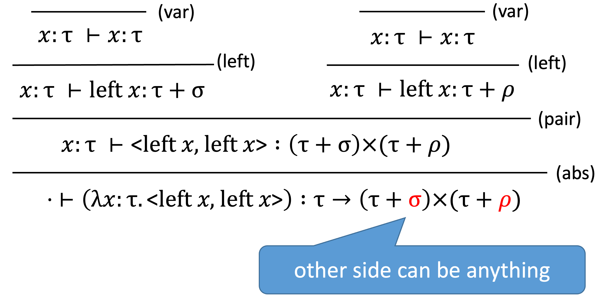
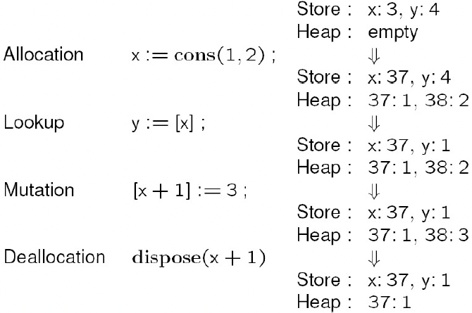

程序设计语言的形式语义，学习笔记
程序设计语言的形式语义
Formal Semantics of Programming Languages
Introdution
Formal Semantics:
- To assign mathematica meanings to language contructs & programs
- A scientific way to study PL and programming
- “developing general abstractions”
- “considers software behavior in a rigorous and general way”
- More than testing
Mathematical backgroud
Sets ★
基本概念 Basic Notations:
- $x \in S$，membership
- $S \subseteq T$，subset
- $S \subset T$，proper subset 真子集
- $S \subseteq^{\text{fin}} T$，finite subset
- $S=T$，equivalence
- $\emptyset$，the empty set
- $\mathrm{N}$，natural numbers
- $\mathrm{Z}$，intergers
- $\mathrm{B}$，$ { true, false } $
- $S\cap T \overset{def}{=} { x \mid x \in S \text { and } x \in T } $，intersection
- $S \cup T \overset{def}{=} { x \mid x \in S \text { or } x \in T } $， union
- $S-T \overset{def}{=} { x \mid x \in S \text { and } x \notin T } $，difference
- $\mathcal{P}(S) \overset{def}{=} { T \mid T \subseteq S } $，powerset
- $ [m, n] \overset{def}{=} { x \mid m \leq x \leq n } $，integer range
广义并集 generalized unions:
- $\bigcup \mathcal{S}\stackrel{\text { def }}{=} { x \mid \exists T \in \mathcal{S} . x \in T } $
- Here $S$ is a set of sets
- 带量词的逻辑判断：$\exists T. T \in S \wedge x \in T$
- $\Rightarrow \bigcup \empty = \empty$
- $\bigcup\limits_{i \in I} S(i) \stackrel{\text { def }}{=} \bigcup { S(i) \mid i \in I } $
$\bigcup\limits_{i=m}^{n} S(i) \stackrel{\text { def }}{=} \bigcup\limits_{i \in[m, n]} S(i)$- $S(i)$ 是一个依赖 i 来定义的集合，比如 $S(i)= { x \mid x>i+3 } $
- 例子：证明 $A\cup B=\bigcup { A,B } $
- 例子：$S(i)=[i,i+1], I= { j^2 \mid j \in [1,3] } $ 得 $\bigcup\limits_{i\in I} S(i)= { 1,2,4,5,9,10 } $
广义交集 generalized intersections:
- $\bigcap \mathcal{S} \stackrel{\text { def }}{=} { x \mid \forall T \in \mathcal{S} . x \in T } $
- Here $S$ is a set of sets
- 带量词的逻辑判断：$\forall T. T \in S \Rightarrow x \in T$
- 代入 $S=\empty \Rightarrow { x \mid \forall T.T\in S \Rightarrow x\in T } $ 其中 $T\in S$ 为假，则推论 $x\in T$ 永远为真
$\Rightarrow \bigcup \empty = \text{meaningless}$- 这是罗素悖论 Russell’s paradox
- 定义 $A: \text{set of everything}$
- 构造集合 $B= { x \mid x \in A \and x \not\in x } $
- 由于 A 的定义得 $B\in A$，现在问 $B\in B$ ？
- 如果 $B\in B$，由 B 的定义得知 $B\notin B$
如果 $B\notin B$，由 B 的定义得知 $B\in B$
- 这是罗素悖论 Russell’s paradox
- $\bigcap\limits_{i \in I} S(i) \stackrel{\text { def }}{=} \bigcap { S(i) \mid i \in I } $
$\bigcap\limits_{i=m}^{n} S(i) \stackrel{\text { def }}{=} \bigcap\limits_{i \in[m, n]} S(i)$
Relations
笛卡尔积 Cartesian product：
- $A\times B = { (x,y) \mid x\in A\ and\ y \in B } $
- (x, y) 是 pair
- projections over pairs: $\pi_0(x,y)=x$、$\pi_1(x,y)=y$
- 如果 $\rho \subseteq A\times B$ or $\rho \in \mathcal{P}(A\times B)$，$\rho$ 是一个 A to B 的关系
- 特殊地，$\rho \subseteq S\times S$，则说 $\rho$ 是 S 上的关系
- $(x,y)\in \rho$，即 $\rho $ 关联 x 和 y，也写作 $x\ \rho\ y$
- 自反关系；$\forall(x,y)\in\rho.x=y$
基本概念 Basic Notations：
- $\text{Id}_{S} \stackrel{\text { def }}{=} { (x, x) \mid x \in S } $，the identity on S
- $\text{dom}(\rho) \stackrel{\text { def }}{=} { x \mid \exists y .(x, y) \in \rho } $，the domain of $\rho$
- $\text{ran}(\rho) \stackrel{\text { def }}{=} { y \mid \exists x .(x, y) \in \rho } $，the range of $\rho$
- $\rho^{\prime} \circ \rho \stackrel{\text { def }}{=} { (x, z) \mid \exists y.(x, y) \in \rho \and (y, z) \in \rho^{\prime} } $，composition of $\rho$ and $\rho^{\prime}$
- $\rho^{-1} \stackrel{\text { def }}{=} { (y, x) \mid(x, y) \in \rho } $，inverse of $\rho$
性质和例子：
$$
\begin{equation}
\begin{gathered}
\left(\rho_{3} \circ \rho_{2}\right) \circ \rho_{1}=\rho_{3} \circ\left(\rho_{2} \circ \rho_{1}\right) \
\rho \circ \mathrm{ld}{S}=\rho=\operatorname{ld}{T} \circ \rho, \text { if } \rho \subseteq S \times T \
\operatorname{dom}\left(\mathrm{Id}{S}\right)=S=\operatorname{ran}\left(\mathrm{Id}{S}\right) \
\mathrm{Id}{T} \circ \mathrm{ld}{S}=\operatorname{ld}{T \cap S} \
\mathrm{ld}{S}{ }^{-1}=\mathrm{Id}{S} \
\left(\rho^{-1}\right)^{-1}=\rho \
\left(\rho{2} \circ \rho_{1}\right)^{-1}=\rho_{1}{ }^{-1} \circ \rho_{2}{ }^{-1} \
\rho \circ \emptyset=\emptyset=\emptyset \circ \rho \
\mid \mathrm{d}{\emptyset}=\emptyset=\emptyset^{-1} \
\operatorname{dom}(\rho)=\emptyset \Longleftrightarrow \rho=\emptyset \ \
<\subseteq \leq \
<\cup Id{\mathrm{N}}=\leq \
\leq \cap \geq =\mathrm{Id}_{\mathrm{N}} \
<\cap \geq =\emptyset \
<\circ \leq =<\
\leq 0 \leq =\leq \
\geq =\leq^{-1}
\end{gathered}
\end{equation}
$$
等价关系 Equivalence Relations：
- 自反 Reflexivity: $Id_S \subseteq \rho$
- 对称 Symmetry: $\rho^{-1}=\rho$
- 传递 Transitivity: $\rho \circ \rho \subseteq \rho$
Functions ★
定义：
函数是一种特殊的关系，满足 $\forall x, y,y’.(x,y)\in\rho \and (x,y’)\in\rho \quad\Rightarrow\quad y=y’ $
Function application $f(x)$ 可写为 $f\ x$
$\empty $ 和 $Id_S$ 也是函数
如果 $f,g$ 是函数，$g \circ f$ 也是函数：$(g\circ f)\ x = g(f\ x)$，$f^{-1}$ 不一定是函数除非 $f$ 是单射
单射 injection、满射 surjection、双射 bijection
Denoted by Typed Lambda Expressions，通过带类型的 Lambda 表达式来表示函数：
- $\lambda x\in S.E$：表示函数 f 在定义域 S 上的元素有 $f(x)=E$
- 例子：$\lambda x\in \mathrm{N}.x+3$ 表示 $ { (x, x+3) \mid x \in \mathbf{N} } $
Variation：
- 单点修改：$f { x \rightsquigarrow n } \stackrel{\text { def }}{=} \lambda z. \begin{cases}f z & \text { if } z \neq x \ n & \text { if } z=x\end{cases} $
- 此时的定义域和值域：$\begin{aligned}
&\operatorname{dom}(f { x \rightsquigarrow n } )=\operatorname{dom}(f) \cup { x } \
&\operatorname{ran}(f { x \rightsquigarrow n } )=\operatorname{ran}\left(f-\left { \left(x, n^{\prime}\right) \mid\left(x, n^{\prime}\right) \in f\right } \right) \cup { n }
\end{aligned}$ - 例子：$(\lambda x \in[0 . .2] .x+1) { 2 \rightsquigarrow 7 } = { (0,1),(1,2),(2,7) } \ (\lambda x \in[0 . .1] . x+1) { 2 \rightsquigarrow 7 } = { (0,1),(1,2),(2,7) } $
Function Type 函数类型：
- $A\rightarrow B$：表示 A to B 上的所有 total function 的集合（没有特别说明都默认是 total function）
- $A \rightharpoonup B$：表示 A to B 上的所有 partial function 的集合
- $\rightarrow $ 是右相关：$A\rightarrow B\rightarrow C=A\rightarrow (B\rightarrow C)$
- 如果 $f \in A\rightarrow B\rightarrow C$、$a\in A \and b\in B$，有 $f\ a\ b = (f(a))b\in C$
Functions with multiple arguments：
- $$
\begin{aligned}
&f \in A_{1} \times A_{2} \times \cdots \times A_{n} \rightarrow A \
&f=\lambda x \in A_{1} \times A_{2} \times \cdots \times A_{n} \cdot E \
&f\left(a_{1}, a_{2}, \ldots, a_{n}\right)
\end{aligned}
$$ - Currying it gives us a function
$$
\begin{aligned}
&g \in A_{1} \rightarrow A_{2} \rightarrow \cdots \rightarrow A_{n} \rightarrow A \
&g=\lambda x_{1} \in A_{1} . \lambda x_{2} \in A_{2} \ldots \lambda x_{n} \in A_{n} .E \
&g a_{1} a_{2} \ldots a_{n}
\end{aligned}
$$
Products
将笛卡尔积推广到 n sets：
- $S_{0} \times S_{1} \times \cdots \times S_{n-1}=\left { \left(x_{0}, \ldots, x_{n-1}\right) \mid \forall i \in[0, n-1] \cdot x_{i} \in S_{i}\right } $
- 此时 $\left(x_{0}, \ldots, x_{n-1}\right)$ 是一个 n-tuple，有 $\pi_i(x_0,…,x_{n-1})=x_i$
将 Tuples 作为函数：
我们可以将 (x, y) 视为一个函数：$\lambda i \in \mathbf{2} . \begin{cases}x & \text { if } i=0 \ y & \text { if } i=1\end{cases} ，\mathbf{2} = { 0,1 } $
- 此时相当于 re-define $A \times B \stackrel{\text { def }}{=} { f \mid \operatorname{dom}(f)=2, \text { and } f\ 0 \in A \text { and } f\ 1 \in B } $
相似地，$\lambda i \in \mathbf{n} . \begin{cases}x_{0} & \text { if } i=0 \ \cdots & \ldots \ x_{n-1} & \text { if } i=n-1\end{cases} ，\mathbf{n}= { 0,1, \ldots, n-1 } $
- $S_{0} \times \cdots \times S_{n-1} \stackrel{\text { def }}{=}\left { f \mid \operatorname{dom}(f)=\mathbf{n}, \text { and } \forall i \in \mathbf{n} . f\ i \in S_{i}\right } $
广义乘：
$\prod\limits_{i \in I} S(i) \stackrel{\text { def }}{=} { f \mid \operatorname{dom}(f)=I, \text { and } \forall i \in I . f\ i \in S(i) } $
$\prod\limits_{i=m}^{n} S(i) \stackrel{\text { def }}{=} \prod\limits_{i \in[m, n]} S(i) $令 $\theta $ 是一个从 a set of indices 到 a set of sets 的函数，定义 $\sqcap\theta$，如下：
$$
\sqcap \theta \stackrel{\text { def }}{=} { f \mid \operatorname{dom}(f)=\operatorname{dom}(\theta), \text { and } \forall i \in \operatorname{dom}(\theta) . f i \in \theta i }
$$例子：令 $\theta=\lambda i\in I.S(i)$，有 $\sqcap\theta =\prod\limits_{i\in I}S(i) $
例子：令 $\theta=\lambda i\in \mathbf{2.B}$，有 $\sqcap\theta = \begin{aligned} { & { (0,true),(1,true) } , \ & { (0,true),(1,false) } , \& { (0,false),(1,true) } , \& { (0,false),(1,false) } } \end{aligned} $，即 $\sqcap\theta = \mathbf{B}\times \mathbf{B} $ （此时 × 的定义是 $A \times B \stackrel{\text { def }}{=} { f \mid \operatorname{dom}(f)=2, \text { and } f\ 0 \in A \text { and } f\ 1 \in B } $ ）
例子：$\sqcap\empty= { \empty } $
例子：$\exists i\in dom(\theta).\theta\ i=\empty\quad \Rightarrow\quad \sqcap\theta=\empty $
幂次 Exponentiation：
由于 $\prod_\limits{x \in T} S(x)=\sqcap \lambda x \in T . S(x) $，若 $S$ 与 x 无关，则记：
$$
\begin{aligned}
S^{T} &=\prod_{x \in T} S=\sqcap \lambda x \in T . S \
&= { f \mid \operatorname{dom}(f)=T\ \text { and }\ \forall x \in T . f\ x \in S } \&=(T \rightarrow S)
\end{aligned}
$$例子：$\mathbf2^S = (S \rightarrow \mathbf2)$
此时 $\forall T.T\subseteq S$，可以定义 $f=\lambda x \in S . \begin{cases}1 & \text { if } x \in T \ 0 & \text { if } x \in S-T\end{cases}$，故有 $f\in(S \rightarrow \mathbf2) $
Sums (or Disjoint Unions)
引入：
- let $A= { 1,2,3 } , B= { 2,3 } $，we index the elements according to which set they originated in, to define the disjoint union 不相交并集：
$$
\begin{aligned}
A^{\prime} &= { (0,1),(0,2),(0,3) } \
B^{\prime} &= { (1,2),(1,3) } \
A+B &=A^{\prime} \cup B^{\prime}
\end{aligned}
$$
概念：
$$
A+B \stackrel{\text { def }}{=} { (i, x) \mid i=0 \text { and } x \in A, \text { or } i=1 \text { and } x \in B } \
$$
投影操作：
- $\iota_{A+B}^{0} \in A \rightarrow A+B $
- $\iota_{A+B}^{1} \in B \rightarrow A+B $
推广到 n 个集合：
$$
S_{0}+S_{1}+\cdots+S_{n-1} \stackrel{\text { def }}{=}\left { (i, x) \mid i \in \mathbf{n} \text { and } x \in S_{i}\right }
$$
广义和：
推广到无限集上：
$$
\begin{aligned}
&\sum_{i \in I} S(i) \stackrel{\text { def }}{=} { (i, x) \mid i \in I \text { and } x \in S(i) } \
&\sum_{i=m}^{n} S(i) \stackrel{\text { def }}{=} \sum_{i \in[m, n]} S(i) \
& \sum_{i \in I} S(i)=\sum \lambda i \in I . S(i)
\end{aligned}
$$令 $\theta $ 是一个从 a set of indices 到 a set of sets 的函数，定义 $\sum\theta$ 如下：
$$
\Sigma \theta \stackrel{\text { def }}{=} { (i, x) \mid i \in \operatorname{dom}(\theta) \text { and } x \in \theta i }
$$
例子：$\sum\limits_{i \in \mathbf{n}} S(i)=\Sigma \lambda i \in \mathbf{n} . S(i)= { (i, x) \mid i \in \mathbf{n}\ and\ x \in S(i) } $
例子：令 $\theta=\lambda i \in \mathbf{2}.\mathbf{B}$，
有 $\Sigma \theta= { (0, \text {true}),(0, \text {false}),(1, \text {true}),(1,\text {false}) } $，
即是说 $\Sigma \theta=2 \times \mathbf{B}$例子：$\sum\empty=\empty$
例子：如果 $\forall i \in \operatorname{dom}(\theta) . \theta i=\emptyset$,，则有 $\Sigma \theta=\emptyset$
例子：令 $\theta=\lambda i \in 2.\begin{cases}\mathbf{B} & \text { if } i=0 \ \emptyset & \text { if } i=1\end{cases}$，有 $\sum \theta= { (0, true),(0, false) } $
若 $\sum\limits_{i \in I} S(i)=\sum \lambda i \in I . S(i)$ 中 S 独立于 i ，则 $\begin{aligned}
\sum_{x \in T} S &=\Sigma \lambda x \in T . S \
&= { (x, y) \mid x \in T \text { and } y \in S } \ &=(T \times S)
\end{aligned}$
Coq 相关
略
Lambda Calculus (λ-calculus)
概念：
- 一种 PL
- Model for computation
为什么要学：
foundations of functional programming (like Lisp, ML, Haskell)
used as a core language to study language theories
type system
scope and binding
higher-order funcitons
denotational semantics
program equivalence
…
例子：
1
2
3
4int x = 0;
for (int i=0; i<10; i++) { x++; }
x = "abcd"; // bug (mistype)
i++; // bug (out scope)如何形式化定义和描述出上述 bug
Overview：
Syntax 语法
Semantics 语义
其他（type system, model theory）
Syntax
- λ terms or λ expressions：
`(Terms) M, N ::= x | λx.M | M N`- 使用 BNF 范式定义，回忆编译中表达式的定义：
(Exp) e ::= n | x | e+e | ..... - Lambda abstraction (λx.M): 匿名函数
int f(int x) { return x;}可以写成 λx.x - Lambda application (M N):
(λx.x) 3 = 3 - pure λ-calculus
- 使用 BNF 范式定义，回忆编译中表达式的定义：
- Add extra operations and data types
惯例 conventions：
Body of λ extends as far to the right as possible 右结合
- 比如
λx.M N表示λx. (M N)而不是(λx. M) N λx. f x = λx. (f x)λx. λf. f x = λx. (λf. f x)
- 比如
Function applications are left-associative 左相关
- 比如
M N P表示(M N) P而不是M (N P) (λx. λy. x-y) 5 3 = ((λx. λy. x-y) 5) 3(λf. λx. f x) (λx. x+1) 2 = ( (λf. λx. f x) (λx. x+1) ) 2
- 比如
Higher-order functions：
functions can be returned as return values
λx. λy. x-y
functions can be passed as arguments
(λf. λx. f x) (λx. x+1) 2given function
f, return functionf ○ fλf. λx. f (f x)(λf. λx. f (f x)) (λy. y+1) 5
= (λx. (λy. y+1) ((λy. y+1) x)) 5
= (λx. (λy. y+1) (x+1)) 5
= (λx. (x+1)+1) 5
= 5+1+1 = 7
柯里化方法 Curried functions
λx. λy. x-y和int f(int x,int y){ return x-y; }不一样，λ abstraction 是一个单参数的函数，虽然计算上是一样的。而且它们可以相互转换- curry:
λ(x, y). x-y(不合法)λx. λy. x-y - uncurry: curry 的逆过程
Free and bound variables：
λx. x+yx: bound variable（可以随时 renamed，它就是一个 placeholder，改完之后两个表达式是 α-equivalence）
y: free variable（不能 rename）
1
2
3int y;
...
int add(int x) { return x+y; }
(λx. x+y) (x+1): x has both a free and a bound occurrence
1
2
3int x = 10;
int add(int x) { return x+y; }
add(x+1);Formal definitions about Free and bound variables：
回忆：
M, N ::= x | λx.M | M Nfv(M): the set of free variables in M- $\text{fv}(x) \overset{def}{=} { x } $
- $\text{fv}(\lambda x.\text{M}) \overset{def}{=} \text{fv}(\text{M})\ \backslash\ { x } $
- $\text{fv}(\text{M}\ \text{N}) \overset{def}{=} \text{fv}(\text{M}) \cup\text{fv}(\text{N}) $
例子：
fv((λx. x) x) = {x}fv((λx. x + y) x) = {x, y}
bould variable 定义无意义
α-equivalence：``λx. M = λy. M[y/x]
，注意 y 是新符号，M[y/x]` 表示把 M 中的 x 都换成 y
Semantics
基本规则 —— β-reduction 贝塔规约：
(λx. M) N→M[N/x]
替换 Substitution：
M[N/x]：将 M 中的 x 都换成 N
（下面定义考试也会给，不用背）x[N/x] $\overset{def}{=}$ N
y[N/x] $\overset{def}{=}$ y
(M P)[N/x] $\overset{def}{=}$ (M[N/x]) (P[N/x])
(λx.M)[N/x] $\overset{def}{=}$ λx.M（只换自由变量）
(λy.M)[N/x] $\overset{def}{=}$ λy.(M[N/x]), if y ∉ fv(N)
(λy.M)[N/x] $\overset{def}{=}$ λz.(M[z/y][N/x]), if y ∈ fv(N) and z fresh（下面将讨论命名捕获）
避免命名捕获 avoid name capture
- name capture：
(λx. x-y)[x/y]，如果替换则得到λx. x-x - 避免方案：在 substitution 之前 rename bound variable
- name capture：
例子：
(λx. (λy. y z) (λw. w) z x) [y/z]= λx. (((λy. y z) (λw. w) z)[y/z] x[y/z])，用的是上面的定义
…
= λx. ( (λy. y z)[y/z] (λw. w)[y/z] z[y/z] x[y/z] )，用定义 3
= λx. ( (λu. (u z)[u/y][y/z]) (λw. w)[y/z] z[y/z] x[y/z] )，用定义 6
= …例子：(λx. (λy. y y) z x)[(f x)/z]
规约规则 Reduction rules：
$$
\frac{}{(\lambda x.M)N \rightarrow M[N/x]} \quad (\beta) \\quad \\frac{M \rightarrow M^{\prime}}{M N \rightarrow M^{\prime} N} \\quad \
\frac{N \rightarrow N^{\prime}}{M N \rightarrow M N^{\prime}} \\quad \
\frac{M \rightarrow M^{\prime}}{\lambda x . M \rightarrow \lambda x . M^{\prime}}
$$“分子” 是前提，”分母” 是结论
→ 不是等号，是一种 relation，如 “M -> M’” 表示 M 可规约一步到 M’
subsitution 用等号，reduction 用箭头例子：
(λf. f x) (λy. y)→ (f x)[(λy. y)/f] // 用 β
= (λy. y) x // 用定义 3、1、2
→ y[x/y] // 用 β
= x例子：
(λy. λx. x - y) x→ (λx. x - y)[x/y]
= λz. ((x - y)[z/x][x/y])
= λz. ((z - y)[x/y])
= λz. z - x例子：λx. (λy. y+1) x
有 (λy. y+1) x → (y+1)[x/y] = x+1
用 4th rule 得 λx. (λy. y+1) x → λx. x+1例子：(λf. λz. f (f z)) (λy. y+x) // apply (β)
→ λz. (λy. y+x) ((λy. y+x) z) // apply (β) and the 3rd &4th rules
→ λz. (λy. y+x) (z+x) // apply (β) and the 4th rule
→ λz. z+x+x
Normal form：
- β-redes：一个形式为
(λx. M) N的 term - β-normal form：一个不含 β-redex 的项
- stopping point：不能再用 β-reduction 规则
- 例子：
(λf. λx. f (f x)) (λy. y+1) 2
→ ( λx. (λy. y+1) ((λy. y+1) x) ) 2
→ ( λx. (λy. y+1) (x+1) ) 2
→ ( λx. x+1+1 ) 2
→ 2+1+1
Confluence 合流性（Church-Rosser Property）：
无论用怎样的策略去 reduction，这个 term 最终达到同一个结果（如果有的话）
把合流性形式化表达（Formalizing Confluence Theorem）
定义：$M \rightarrow^* M’$ 为 zero-or-more steps of → 使得 M 到 M’
归纳法定义 inductive definition 如下：
$\begin{aligned}&M \rightarrow^0 M’ & \text{iff}& \quad M=M’ \& M \rightarrow^{k+1} M’ & \text{iff}&\quad \exists M’’.M\rightarrow M’’ \and M’’ \rightarrow^k M’ \ & M \rightarrow^*M’ & \text{iff}&\quad \exists k.M\rightarrow^k M’ \end{aligned}$
Confluence Theorem
- M → M1 → M’
↘ M2 ↗ - 若 $M\rightarrow^* M_1，M \rightarrow^* M_2$ ，则存在 M’，满足 $M_1\rightarrow^* M’，M_2 \rightarrow^* M’$
- M → M1 → M’
推论：
由于 α-equivalence，每个 term 最多有一个 normal form
提问：如果一个 term 有多个 β-redex，哪个会被选择来规约
- good news：无论哪个被选，至多一个 normal form
- bad news：一些规约策略可能无法找到 normal form
- Non-terminating reduction 例子
- (λx. x x) (λx. x x)
→ (λx. x x) (λx. x x)
→ … - (λx. x x y) (λx. x x y)
→ (λx. x x y) (λx. x x y) y
→ … - (λx. f (x x)) (λx. f (x x))
→ f ((λx. f (x x)) (λx. f (x x)))
→ …
- (λx. x x) (λx. x x)
- 同时有 Non-terminating 和 terminating reduction 的例子
- 例子：
(λu. λv. v) ((λx. x x)(λx. x x))
→ λv. v - 例子：
(λu. λv. v) ((λx. x x)(λx. x x))
→ (λu. λv. v) ((λx. x x)(λx. x x))
→ …
- 例子：
- Non-terminating reduction 例子
Reduction strategies：
Normal-order reduction：优先选 left-most、outer-most 的 redex
- left-most: whose lambda is left to any other
outer-most: not contained in any other
inner-most: not contain any other - 在函数并没有用到 bound variable 时会使得 reduction 更快
- 例子：
(λx. x x) ((λy. y) (λz. z))
→ ((λy. y) (λz. z)) ((λy. y) (λz. z))
→ (λz. z) ((λy. y) (λz. z))
→ (λy. y) (λz. z)
→ λz. z
- left-most: whose lambda is left to any other
Applicative-order reduction: 优先选 left-most、inner-most redex
- 有时候会使得 reduction 次数变少（ 原理比如 (λx. M)(N) 优先将 N 化简，这样避免了代入 M 后还要多次化简）
- 例子：
(λx. x x) ((λy. y) (λz. z))
→ (λx. x x) (λz. z)
→ (λz. z) (λz. z)
→ λz. z
Evaluation strategies：
reduction vs. evaluation（将 reduction 类比编程语言里的求值策略 evaluation strategies）
- Call-by-name (类似 normal-order)，实参不急着求值，而是代入到函数体里
- ALGOL 60
- Call-by-need（缓存版的 call-by-name），也称 “lazy evaluation”
- Haskell，R，…
- Call-by-value（类似 applicative-order），也称 “eager evaluation”
- C，…
- Call-by-name (类似 normal-order)，实参不急着求值，而是代入到函数体里
二者的细微区别 subtle difference
- Normal-order (or applicative-order) reduces under lambda
- 允许函数体内的优化
- 并不是期望的
- λx. ((λy. y y) (λy. y y))
→ λx. ((λy. y y) (λy. y y))
→ …
- Evaluation strategies：不会 reduces under lambda
- Normal-order (or applicative-order) reduces under lambda
Evaluation 并不总是都能规约到 normal form
会停在包含 canonical form（比如一个 lambda abstraction）时
$\begin{aligned}
& (\lambda x . x(\lambda y . x y y) x)(\lambda z . \lambda w . z) \ & \rightarrow(\lambda z . \lambda w . z)(\lambda y .(\lambda z . \lambda w . z) y y)(\lambda z . \lambda w . z) \
& \rightarrow(\lambda w . \lambda y .(\lambda z . \lambda w . z) y y)(\lambda z . \lambda w . z) \
& \rightarrow \lambda y .(\lambda z . \lambda w . z) y y \quad \quad （evaluation 会停在这）\
& \rightarrow \lambda y .(\lambda w . y) y \
& \rightarrow \lambda y . y
\end{aligned} $
Evaluation 只对 closed term 求值
- closed term：没有自由变量
- closed normal term 一定是 canonical form，但并不是每一个 closed canonical form 都是 normal form
如果 normal-order reduction 中止，在规约过程中一定包含一个 first cononical form
例子：
(λx. λy. x y) (λx. x)
→ λy. (λx. x) y （evaluation 中止在此）
→ λy. y例子：
(λx. λy. x x) (λx. x x)
→ λy. (λx. x x) (λx. x x) （evaluation 中止在此）例子：
(λx. x x) (λx. x x)
→ (λx. x x) (λx. x x)
→ … （reduction 和 evaluation 都不中止）Normal-order evaluation rules：
$$
\frac{}{\lambda x . M \Rightarrow \lambda x . M} \quad (Term)
\\quad\
\frac{M \Rightarrow \lambda x . M^{\prime} \quad\quad M^{\prime}[N / x] \Rightarrow P}{M N \Rightarrow P}\quad (\beta)
$$例子：
small-step 版规则（注意下面是单箭头不是双箭头）：
$$
\frac{}{(\lambda x.M)N \rightarrow M[N/x]} \quad (\beta) \\quad \\frac{M \rightarrow M^{\prime}}{M N \rightarrow M^{\prime} N} \\quad
$$
比起 reduction rules 少了两个规则，因为 normal-order 并不想优先对 N->N’ 和 M->M’ 做化简，只要 evaluation 到了 canonical form 就会停止
Eager evaluation rules：
Postpone 延迟 the substitution until the argument is a canonical form.
No need to reduce many copies of the argument separately.
$$
\frac{}{\lambda x.M \Rightarrow_{E} \lambda x.M} \quad\quad (Term) \\frac{M \Rightarrow_{E} \lambda x.M^{\prime} \quad\quad N \Rightarrow_{E} N^{\prime} \quad\quad M^{\prime}\left[N^{\prime} / x\right] \Rightarrow_{E} P}{M N \Rightarrow_{E} P} \quad\quad (\beta)
$$例子：
<img src="image-20210928174113312.png" style="zoom: 60%;" />small-step 版规则（注意下面是单箭头不是双箭头）：
思想是，当 M 已经到达 Canonical form 后（用了第2个规则），现在还需要对 N 做 evaluation，当 N 已经有 Canonical form（用了第3个规则），之后就可以做 β 替换了。
$$
\frac{}{(\lambda x.M)(\lambda y.N) \rightarrow M[(\lambda y.N)/x]} \quad (\beta) \\quad \ \frac{M \rightarrow M^{\prime}}{M N \rightarrow M^{\prime} N} \\quad \ \frac{N \rightarrow N^{\prime}}{(\lambda x.M) N \rightarrow (\lambda x.M) N^{\prime}}
$$Programming in λ-calculus
Boolean（encoding boolean values and operators）：
True ≡ λx. λy. xFalse ≡ λx. λy. ynot ≡ λb. b False True- not True
= (λb. b False True) True
→ True False True
= (λx. λy. x) False True
→ (λy. False) True
→ False - not False
→ False False True
→ True
- not True
and ≡ λb. λb’. b b’ Falseor ≡ λb. λb’. b True b’if b then M else N ≡ b M Nnot’ ≡ λb. λx. λy. b y x
Church Numerals（Church 是个人名）：
- $\underline{0}$ ≡ λf. λx. x
- $\underline{1}$ ≡ λf. λx. f x
- $\underline{2}$ ≡ λf. λx. f (f x)
- $\underline{n}$ ≡ λf. λx. fn x
succ ≡ λn. λf. λx. f (n f x)- succ $\underline{n}$
→ λf. λx. f (n f x)
= λf. λx. f ((λf. λx. $f^n$ x) f x)
→ λf. λx. f ($f^n$ x)
= λf. λx. $f^{n+1}$ x
= $\underline{n+1}$
- succ $\underline{n}$
iszero ≡ λn. λx. λy. n (λz. y) x- iszero 0
→ λx. λy. 0 (λz. y) x
= λx. λy. (λf. λx. x) (λz. y) x
→ λx. λy. (λx. x) x
→ λx. λy. x = True - iszero 1
→ λx. λy. 1 (λz. y) x
= λx. λy. (λf. λx. f x) (λz. y) x
→ λx. λy. (λx. (λz. y) x) x
→ λx. λy. ((λz. y) x)
→ λx. λy. y = False - iszero (succ n) →* False
- iszero 0
add ≡ λn. λm. λf. λx. n f (m f x)mult ≡ λn. λm. λf. n (m f)
Pairs：
- $(M, N) \equiv \lambda f . f\ \mathrm{M}\ N$
- $\pi_{0} \equiv \lambda p \cdot p(\lambda x . \lambda y \cdot x)$
- $\pi_{1} \equiv \lambda p \cdot p(\lambda x \cdot \lambda y \cdot y)$
Tuples：
- $\left(M_{1}, \ldots, M_{n}\right) \equiv \lambda f_{.} f\left(M_{1} \ldots M_{n}\right.$
- $\pi_{\mathrm{i}} \equiv \lambda \mathrm{p} . \mathrm{p}\left(\lambda \mathrm{x}{1} …. \lambda \mathrm{x}{\mathrm{n}}. \mathrm{x}_{\mathrm{i}}\right)$
Recursive functions：
我们要 encode
fact(n) = if (n==0) then 1 else n*fact(n-1)这个递归函数先引入 fixpoint
数学上的不动点 fixpoint in arithmetic：f(x)=x，此时 x 是 f 的不动点
fact是函数的不动点，证明：fact(n) = if (n == 0) then 1 else n * fact(n-1)fact = λn. if (n == 0) then 1 else n * fact(n-1)fact = (λf. λn. if (n == 0) then 1 else n * f(n-1)) fact- 令
F = λf. λn. if (n == 0) then 1 else n * f(n-1)，
有fact = F fact，类似x=f(x)符合上面数学不动点的公式，得证。
在 λ-calculus 每个 term 都有一个不动点
Fixpoint combinator：一个高阶函数 h，使得对所有的 f，(h f) 是一个不动点，即
h f = f (h f)Turing’s fixpoint combinator
Θ：令A = λx. λy. y (x x y)，则Θ = A A证明：对于所有的 f，
Θ f = f (Θ f)（其中等号意味着 $\rightarrow^* \and \leftarrow ^* $，即左右可以相互 reduce 得到）
$\begin{aligned}\Theta f &= A A f \ &=(\lambda x.\lambda y. y( x x y)) A f \&\rightarrow (\lambda y. y(AAy)) f \ &\rightarrow f(AA f) \&= f(\Theta f) \end{aligned}$Church’s fixpoint combinator Y：
Y = λf. (λx. f (x x)) (λx. f (x x))
此时，对 fact 的 encode，可以令
F = λf. λn. if (n == 0) then 1 else n * f(n-1)，则fact = Θ F
Simply-Typed Lambda Calculus (STLC)
review of untyped λ-calculus：
(λx. x x) (λx. x x) → ...- 所以这部分内容是给 λ-calculus 加类型系统
为什么要类型：
- Type checking catched “simple” mistakes early
- (Type safety) Well-typed programs will not go wrong
- Typed programs are easier to analyze and optimize
Outline：
- Typing rules 定型规则：assign types to terms
- Type safety
Judgment：
- statement：
J是关于某些形式化的性质 - derivation（比如 a proof）：
⊢ J推导，比如⊢ M : τ是 informal 地表示 M 有类型 τ - meaning（”judgment semantics”）：
⊨ J定义 J 的含义
为 λ-calculus 加类型：
(Types) τ,σ ::= T | σ -> τ(Terms) M, N ::= x | λx : τ. M | M N
Typin judgment：
Γ ⊢ M : τ，M 在上下文 Γ 中是类型 τ- $\Gamma \in \mathcal{P}(Var \times Type)$，是一个集合
Typring context (a set of typing assumptions)：
Γ ::= · | Γ, x:τ·：Empty context，说明 M 是 closed terms（即没有自由变量）Γ, x:τ是一个集合，表示Γ再加上所有 M 中自由变量的类型
Typing rules（a.k.a. Static Semantics）：
$$
\frac{}{\Gamma, x: \tau \vdash x: \tau} \quad(var)
\\quad\
\frac{\Gamma \vdash M: \sigma \rightarrow \tau \quad\quad\quad \Gamma \vdash N: \sigma}{\Gamma \vdash M N: \tau}\quad (app)
\\quad\
\frac{\Gamma, x: \sigma \vdash M: \tau}{\Gamma \vdash(\lambda x: \sigma . M): \sigma \rightarrow \tau}\quad (abs)
$$
- typing derivation 例子：
Soundness and completeness 可靠性和完备性：
Soundness：A sound type system never accepts a program that can go wrong
No false negatives 没有假阴性
well-type terms in STLC never go wrong
type safety theorem：
If $\cdot \vdash M: \tau$ and $M \rightarrow^{*} M^{\prime}$
then $\cdot \vdash M^{\prime}: \tau$ and ($M^{\prime} \in \text{Values}$ or $\exists M^{\prime \prime} . M^{\prime} \rightarrow M^{\prime \prime}$)Values：定义在语言语义中的，比如 λ-abstraction (λx. M)、constants (c)，即表示规约到一个具体的值了- 即是说，well-typed term 要么不会终止规约，要么规约到一个期望类型的值
type safety 的两个 key lemmas
- preservation (subject reduction)：
If $\cdot \vdash M: \tau$ and $M \rightarrow M^{\prime}$，
then $\cdot \vdash M^{\prime}: \tau$ - progress：
If $\cdot \vdash M: \tau$，
then ($M \in \text{Values}$ or $\exists M^{\prime} . M \rightarrow M^{\prime}$) - 一个问题：当修改 type system 或 reduction rule 时，preservation 和 progress 是否还能成立
- preservation (subject reduction)：
对 type safety 的证明（From Lecture Notes）
- 证之前先重设一下现在的 Syntax 和 Semantics：
$$
Syntax:\quad\quad
\begin{aligned}
e &::=c\ |\ \lambda x \cdot e \ |\ x \mid e\ e \
v &::=c \mid \lambda x \cdot e \
\tau &::=\text { int } \mid \tau \rightarrow \tau \
\Gamma &::=\cdot \mid \Gamma, x: \tau
\end{aligned}
\\quad\ Evaluation\ Rules:\quad\quad
\begin{aligned}
&\frac{}{(\lambda x . e) v \rightarrow e[v / x]} & \text{(E-APPLY)}
\\\\ &
\frac{e_{1} \rightarrow e_{1}^{\prime}}{e_{1} e_{2} \rightarrow e_{1}^{\prime} e_{2}} & \text{(E-APP1)}
\\\\ &
\frac{e_{2} \rightarrow e_{2}^{\prime}}{v e_{2} \rightarrow v e_{2}^{\prime}} & \text{(E-APP2)}
\end{aligned}
\\\quad\\ Typing\ Rules:\quad\quad
\begin{aligned}
&\frac{}{\Gamma \vdash c: \text { int }} & \text{(T-CONST)}
\\\\ &
\frac{}{\Gamma \vdash x: \Gamma(x)} & \text{(T-VAR)}
\\\\ &
\frac{\Gamma, x: \tau_{1} \vdash e: \tau_{2} \quad x \notin \operatorname{Dom}(\Gamma)}{\Gamma \vdash \lambda x . e: \tau_{1} \rightarrow \tau_{2}} & \text{(T-FUN)}
\\\\ &
\frac{\Gamma \vdash e_{1}: \tau_{2} \rightarrow \tau_{1} \quad \Gamma \vdash e_{2}: \tau_{2}}{\Gamma \vdash e_{1} e_{2}: \tau_{1}} & \text{(T-APP)}
\end{aligned}
$$- 首先证 progress（If $\cdot \vdash e: \tau$，then ($e \in \text{Values}$ or $\exists e^{\prime} . e \rightarrow e^{\prime}$)），可以看到 progress 的前提是 $\cdot \vdash e: \tau$，那如何可以得到 $\cdot \vdash e: \tau$（使其满足的前提是什么）？答案是 typing rules 的里的 “分子” 即 condition。所以要对每个 typing rule，利用得到的 condition 单独讨论。
- 一些前置 Lemma
- Canonical Forms：
If $\cdot \vdash v: \tau$, then i. If $\tau$ is int, then $v$ is a constant, i.e., some $c$. ii. If $\tau$ is $\tau_{1} \rightarrow \tau_{2}$, then $v$ is a lambda, i.e., $\lambda x . e$ for some $x$ and e.
- Canonical Forms：
- 对 T-CONST，此时 e 是 c，一个常量，属于 Values，满足 progress。不用多说。
- 对 T-VAR，想要 $\cdot \vdash e: \tau$ 匹配 $\Gamma \vdash x: \Gamma(x)$，不可能，即 $\cdot \vdash e: \tau$ 不可能从 T-VAR 得到（因为 Γ 是 ·，所以不可能存在 Γ(x)），此时 progress 的 if 是 false 的，那么 progress 自然满足。T-VAR 改为 $\frac{}{\Gamma, x: \tau\ \vdash\ x: \tau}$ 也是可行的。
- 对 T-FUN，此时 e 是 $\lambda x. e’ $（出现了两个 e，所以后面一个加个撇），是一个 λ-abstraction，属于 Values，满足 progress。
- 对 T-APP，此时 e 是 $e_1 e_2$，通过 T-APP 由果得因得到 condition 是 $· \vdash e_{1}: \tau_{2} \rightarrow \tau_{1}$ 且 $·\vdash e_2 : \tau_2 $。
如果 e1 不属于 Values，那么 e1 可以继续规约（在这里就用了 progress），即有 e1 → e1’，运用一下 E-APP1，此时 $e_1 e_2 \rightarrow e_1’ e_2$，即能向前规约一步；
如果 e1 属于 Values，若 e2 不属于 Values，同理用 E-APP2，有 $e_1 e_2 \rightarrow e_1e_2'$，即<font color=blue>能向前规约一步</font>。 若 e2 属于 Values，由于 $· \vdash e_{1}: \tau_{2} \rightarrow \tau_{1}$，此时 e1 一定是个 λ-abstraction（PDF 里先证 Canonical Forms 这个 Lemma 后得到），运用 E-APPLY，`e1 e2` 是<font color=blue>能向前规约一步</font>的。
- 一些前置 Lemma
- 然后证 preservation（If $\cdot \vdash e: \tau$ and $e \rightarrow e^{\prime} $，then $\cdot \vdash e^{\prime}: \tau$），和证 progress 一样的方式。
- 一些前置 Lemma
- Substitution：$\text { If } \Gamma, x: \tau^{\prime} \vdash e: \tau \text { and } \Gamma \vdash e^{\prime}: \tau^{\prime}, \text { then } \Gamma \vdash e\left[e^{\prime} / x\right]: \tau $
- Weakening：$\text { If } \Gamma \vdash e: \tau \text { and } x \notin \operatorname{Dom}(\Gamma), \text { then } \Gamma, x: \tau^{\prime} \vdash e: \tau $
- Exchange：$\text { If } \Gamma, x: \tau_{1}, y: \tau_{2} \vdash e: \tau \text { and } y \neq x, \text { then } \Gamma, y: \tau_{2}, x: \tau_{1} \vdash e: \tau $
- 对 T-CONST，e 是 c，一个常量，这是不满足 $e\rightarrow e’$ 的，所以不可能。满足 preservation（if 是 false 的，那 if-then 就是 true 的）
- 对 T-VAR，和证 progress 时的 T-VAR 类似，在空上下文中无法做 typecheck，所以这个 if 也是 false，即 if 的条件不可能是从 T-VAR 导出的。
- 对 T-FUN，e 是 $\lambda x. e_b$，一个 λ-abstraction，属于 Values，其不满足 $e\rightarrow e’$ 的，所以不可能。
- 对 T-APP，此时 e 是 $e_1 e_2$，通过 T-APP 由果得因得到 condition 是 $· \vdash e_{1}: \tau_{2} \rightarrow \tau$ 且 $·\vdash e_2 : \tau_2 $。
然后对于条件 $e\rightarrow e’$（也是 $e_1e_2 \rightarrow e’$），有三种可能导出 $\cdot \vdash e^{\prime}: \tau$ 如下- 对 E-APP1，由 $e=e_1e_2$ 且 $e’=e_1’e_2$，得 $e_1 \rightarrow e_1’ $。
又 $·\ \vdash e_1 : \tau_2 \rightarrow \tau$，得 $·\ \vdash e_1’ : \tau_2 \rightarrow \tau$。（在这里就用了 preservation）
又 $·\vdash e_2 : \tau_2 $，用 T-APP 得 $\cdot \vdash e_1’e_2: \tau$。故 $\cdot \vdash e^{\prime}: \tau$。 - 对 E-APP2，由 $e=ve_2$ 且 $e’=ve_2’$，得 $v=e_1$ 且 $e_2 \rightarrow e_2’$。
又 $·\vdash e_2 : \tau_2 $，得 $·\vdash e_2’ : \tau_2 $。
又 $· \vdash e_{1}: \tau_{2} \rightarrow \tau $，用 T-APP 得 $\cdot \vdash e_1e_2’: \tau$。故 $\cdot \vdash e^{\prime}: \tau $. - 对 E-APPLY，由 $e=(\lambda x. e_b)v$ 且 $e’ = e_b[v/x] $，得 $e_1$ 是 $\lambda x. e_b$ 且 $e_2$ 是 $v$。
又 $· \vdash e_{1}: \tau_{2} \rightarrow \tau $，得 $·,x:\tau_2 \vdash e_b :\tau$。
又 $·\vdash e_2 : \tau_2 $ 再用上 Substitution Lemma（PDF里有证明）得 $· \vdash e_b[e_2/x] : \tau$。故 $\cdot \vdash e^{\prime}: \tau $。
- 对 E-APP1，由 $e=e_1e_2$ 且 $e’=e_1’e_2$，得 $e_1 \rightarrow e_1’ $。
- 一些前置 Lemma
- Completeness：A complete type system never rejects a program that can’t go wrong
- No false positives 没有假阳性
- not complete example
- 对于
(λx. (x (λy. y)) (x 3)) (λz. z)无法找到 σ, τ 使x:σ ⊢ (x (λy. y)) (x 3):τ，因为对于 x 我们无法 pick 到一个类型 - 但实际上
(λx. (x (λy. y)) (x 3)) (λz. z)能规约到3 - strong normalization theorem：well-typed terms in STLC always terminate
但(λx. x x) (λx. x x)无法终止，故不能被 assigned 一个类型
- 对于
- 然而对于图灵完备的程序设计语言，程序是否会出错是不能确定的
- 类型系统不能又 sound 又 complete
- 在保证 sound 的前提下，尽可能 complete
Adding stuff 扩展
可以扩展的：
- Extend the syntax (types & terms)
- Extend the operational semantics (reduction rules)
- Extend the type system (typing rules)
- Extend the soundness proof (new proof cases)
adding product type：
(Types) τ,σ ::= ...(之前的) | σ x τ(Terms) M,N ::= ...(之前的) | <M,N> | proj1 M | proj2 MReduction rules（下面式子中把 proj1 改成 proj2 或者把 M 改成 N，可以有另外 3 个 rules）
$$
\frac{}{\text {proj1}<\mathrm{M}, \mathrm{N}>\rightarrow \mathrm{M} }
\\quad\
\frac{\mathrm{M} \rightarrow \mathrm{M}^{\prime} }{<\mathrm{M}, \mathrm{N}>\rightarrow<\mathrm{M}^{\prime}, \mathrm{N}>}
\\quad\\frac{\mathrm{M} \rightarrow \mathrm{M}^{\prime}}{\operatorname{proj1} \mathrm{M} \rightarrow \operatorname{proj1} \mathrm{M}^{\prime}}
\
$$Typing rules
$$
\begin{aligned}
&\frac{\Gamma \vdash \mathrm{M}: \sigma \quad \Gamma \vdash \mathrm{N}: \tau}{\Gamma \vdash<\mathrm{M}, \mathrm{N}>: \sigma \times \tau} \text { (pair) } \\quad\
&\frac{\Gamma \vdash \mathrm{M}: \sigma \times \tau}{\Gamma \vdash \operatorname{proj1} \mathrm{M}: \sigma}(\text {proj1) } \\quad\
&\frac{\Gamma \vdash \mathrm{M}: \sigma \times \tau}{\Gamma \vdash \operatorname{proj2} \mathrm{M}: \tau}(\operatorname{proj2})
\end{aligned}
$$typing derivation example
加类型后要证 soundness theorem (证 type safety)
- Preservation
- Progress 里的 Values 要包括新加的
<v1,v2>
Adding sum stype：
(Types) τ,σ ::= ... | σ + τ(Terms) M,N ::= ... | left M | right M | case M do M1 M2- 类比 Java 中两个子类实现接口方法，具体一个 instance 执行的时候还是要看是哪个子类的方法。
如果 instance 是 left 类（型）构造出来的，则执行 M1 方法，如果是 right 类（型）
- 类比 Java 中两个子类实现接口方法，具体一个 instance 执行的时候还是要看是哪个子类的方法。
reduction rules:
$$
\frac{}{\text{case (left M) do M1 M2 } \rightarrow \text{M1 M}}
\\quad\
\frac{}{\text{case (right M) do M1 M2 } \rightarrow \text{M2 M}}
\\quad\
\frac{M \rightarrow M’}{ \text{case (M) do M1 M2 } \rightarrow \text{case (M’) do M1 M2 } }
\\quad\
\frac{M1 \rightarrow M1’}{ \text{case (M) do M1 M2 } \rightarrow \text{case (M) do M1’ M2 } }
\\quad\
\frac{M2 \rightarrow M2’}{ \text{case (M) do M1 M2 } \rightarrow \text{case (M) do M1 M2’ } }
\\quad\
\frac{M \rightarrow M’}{ \text{left M} \rightarrow \text{left} M’ }
\\quad\
\frac{M \rightarrow M’}{ \text{right M} \rightarrow \text{right} M’ }
$$typing rules:
$$
\frac{\Gamma \vdash \mathrm{M}: \sigma}{\Gamma \vdash \text { left } \mathrm{M}: \sigma+\tau} \text { (left) } \quad \frac{\Gamma \vdash \mathrm{M}: \tau}{\Gamma \vdash \text { right } \mathrm{M}: \sigma+\tau} \text { (right) }
\\quad\
\frac{\Gamma \vdash \mathrm{M}: \sigma+\tau \quad\quad \Gamma \vdash \mathrm{M} 1: \sigma \rightarrow \rho \quad\quad \Gamma \vdash \mathrm{M} 2: \tau \rightarrow \rho}{\Gamma \vdash \text { case M do M1 M2: } \rho} \text{(case)}
$$typing derivation examples
加类型后要证 soundness theorem (证 type safety)
- Preservation
- Progress 里的 Values 要包括新加的
left v和right v
Products vs. sums：
- “logical duals” (more on this later)
- To make a
σ x τ, we need aσand aτ - To make a
σ + τ, we need aσor aτ - Given a
σ x τ, we can get aσor aτor both (our “choice”) - Given a
σ + τ, we must be prepared for either aσor aτ(the value’s “choice”)
- To make a
Add recursion：
由于 “strong normalization theorem”，即每个 well-typed terms 在 STLC 中要能终止。而有的递归是不会终止的，所以递归不被定型规则接纳（不可能找到 fixed-point combinators 的类型）
现在，添加一个递归的显式构造器：
(Types) τ,σ ::= ...（如上所说，不加新的类型）(Terms) M,N ::= ... | fix M对于
fix的 reduction rules：
$$
\frac{}{\mathbf{fix}\ \lambda x.M \rightarrow M[\mathbf{fix}\ \lambda x.M/x]}
\\quad\
\frac{M\rightarrow M’}{\mathbf{fix}\ M \rightarrow \mathbf{fix}\ M’}
$$对 fix 定型（typing fix）
$$
\frac{\Gamma \vdash M: \tau \rightarrow \tau}{\Gamma \vdash \text { fix } M: \tau} \text { (fix) }
$$- Math explanation:
If M is a function from τ to τ,
thenfix M, the fixed-point of M, is some τ with the fixed-point property - Operational explanation:
fix λx.M’reduces toM’[fix λx.M’/x]- The substitution
[fix λx.M’/x]意味着x和fix λx.M’同类型 - The result
M'由fix λx.M’规约而来，意味着二者同类型
- The substitution
- Math explanation:
而 strong normalization 则被消除了
Curry-Howard isomorphism 同构
我们用这玩意干啥：
- 定义 PL
- 定义类型系统来找出 bad 程序
逻辑学家用着玩意干啥：
- 定义逻辑命题，比如
p, q ::= B | p∧q | p∨q | p=>q - 定义一个证明系统，去证明一些 “good” propositions
Slogens 口号：
- Propositions are Types 命题就是类型
- Proofs are Programs 证明就是程序
Empty and nonempty types：
“nonempty” types：存在这样类型的 closed terms
λx: τ. x: τ → τλx: τ. λf: τ → σ. f x: τ → (τ → σ) → σλf: τ → σ → ρ. λx: σ. λy: τ. f y x: (τ → σ → ρ) → σ → τ → ρλx: τ. <left x, left x>: τ → ((τ + σ) × (τ + ρ))λf: τ → ρ. λg: σ → ρ. λx: τ + σ. (case x do f g): (τ → ρ) → (σ → ρ) → (τ + σ) → ρλx: τ × σ. λy: ρ. < <y, proj1 x>, proj2 x >: (τ × σ) → ρ → ((ρ × τ) × σ)
“empty” types：没有这样类型的 closed terms，也构造不出来
- τ
- τ → σ
- τ + (τ → σ)
- τ → (σ → τ) → σ
那如何得知一个 type 是否是 nonempty
eliminate：将
→换为=>，将×换为∧，将+换为∨nonempty（即以下可以在命题逻辑中被证明）
τ => τ
τ => (τ => σ) => σ
(τ => σ => ρ) => σ => τ => ρ
τ => ((τ ∨ σ) ∧ (τ ∨ ρ))
(τ => ρ) => (σ => ρ) => (τ ∨ σ) => ρ
(τ ∧ σ) => ρ => ((ρ ∧ τ) ∧ σ)
empty（以下无法在命题逻辑中被证明）
- τ
τ => σ
τ ∨ (τ => σ)
τ => (σ => τ) => σ
- τ
例子：propositional-logic proof 命题逻辑证明
propositional logic（natural deduction 自然推导）
总结：
给定一个 well-typed closed terms，在 typing derivation 上 erase 这些 terms，最终得到一个 propositional-logic proof
给定一个 propositional-logic proof 存在一个 closed term 为该类型
一个可以经过 type-checks 的 term 即是一个证明，它表明了 logic formula 如何 derive 到它的类型
λx: τ. xis a proof thatτ => τλx: τ. λf: τ → σ. f xis a proof thatτ => (τ => σ) => σλf: τ → σ → ρ. λx: σ. λy: τ. f y xis a proof that(τ => σ => ρ) => σ => τ => ρλx: τ. <left x, left x>is a proof thatτ => ((τ ∨ σ) ∧ (τ ∨ ρ))λf: τ → ρ. λg: σ → ρ. λx: τ + σ. (case x do f g)is a proof that(τ => ρ) => (σ => ρ) => (τ ∨ σ) => ρλx: τ × σ. λy: ρ. < <y, proj1 x>, proj2 x >is a proof that(τ ∧ σ) => ρ => ((ρ ∧ τ) ∧ σ)
Constructive (hold that thought) propositional logic（构造主义的命题逻辑） 与
simply-typed lambda-calculus with pairs and sums 是同样的东西（同构）- Computation and logic（logic 为了做证明） are deeply connected
- λ is no more or less made up than implication 蕴含
“一个逻辑无论如何会对应到类型系统上面”
why care，为什么关心 curry-howard 同构
- fascinating
- 不需要将 logic 和 computing 看作不一样的东西
- Thinking “the other way” can help you know what’s possible/impossible 思考另一种方式给你带来新的可能与不可能
- Can form the basis for automated theorem provers
- Type systems should not be ad hoc piles of rules! 类型系统不应该是临时性的规则堆积!
Classical vs. Constructive 经典命题逻辑与构造主义的命题逻辑之间对比：
classical propositional logic 多了 “law of the excluded middle 排中律”
$$
\frac{}{\Gamma \vdash p \or(p \Rightarrow q)}
\quad\quad
\text{Think}\quad p \or \neg p
$$STLC does not support it: e.g. no closed term has type
ρ+(ρ→σ)Logics without this rule are called “constructive构造主义的” or “intuitionistic直觉主义的”
- Formulae are only considered “true” when we have direct evidence (“proofs produce examples”)
例子：
- 定义：存在两个 irrational number 无理数 a 和 b 使得 $a^b$ 是有理数
- 经典证明：使用排中律。对于 $\sqrt2^\sqrt2$
- 如果它是有理数，诶，那 $a=b=\sqrt2$，得证
- 如果它是无理数，令 $a = \sqrt2^\sqrt2, b=\sqrt2$，此时 $a^b = (\sqrt2^\sqrt2)^\sqrt2 = \sqrt2^{\sqrt2\times \sqrt2} = (\sqrt2)^2 = 2$，得证
- Constructive logics would not accept this argument
In constructive logics, “branch on possibilities” by making “excluded middle” an explicit assumption 在构造主义逻辑里，硬是要引入排中律，只能显式引入：
(p∨(p⇒q))∧(p⇒r)∧((p⇒q)⇒r)⇒r
对 “fix” 补充：
- A “non-terminating proof” is no proof at all
- 回想一下其定型规则是 $\frac{\Gamma \vdash M: \tau \rightarrow \tau}{\Gamma \vdash \text { fix } M: \tau} \text { (fix) }$，其中相当引入了 $\tau \rightarrow \tau$ 可以得到 $\tau$ ，如果有了这条规则那相当于能证 everything
- So the “logic” is inconsistent
Last word on Curry-Howard：
Not just constructive propositional logic & STLC
Every logic has a corresponding typed system
- Classical logics
- Inconsistent logics
If you remember one thing:
$$
\frac{\Gamma \vdash M: \sigma \rightarrow \tau \quad\quad \Gamma \vdash N: \sigma}{\Gamma \vdash M N: \tau}(\mathrm{app}) \quad\Leftrightarrow\quad \frac{\Gamma \vdash p \Rightarrow q \quad\quad \Gamma \vdash p}{\Gamma \vdash q} (\Rightarrow -elim)
$$
Operational Semantics
现在让我们从 functional language 回到 Imperative languages
Why formal semantics（Formal semantics gives an unambiguous不含糊的 definition of what a program written in the language should do）：
- Understand the subtleties细微之处 of the language
- Offer a formal reference and a correctness definition for implementors of tools (parsers, compilers, interpreters, debuggers, etc)
- Prove global properties of any program written in the language
- Verify programs against formal specifications
- Prove two different programs are equivalent/non-equivalent
- From a computer readable version of the semantics, an interpreter can be automatically generated (full compiler generation is not yet feasible可行的)
semantics 分类：
- Operational semantics 操作语义：程序如何一步步执行（比如 λ-calculus 里的 reduction rules）
- Denotational semantics 指称语义：将程序指称到某种数学对象上（比如 tree、linklist）
- Axiomatic semantics 公理语义：推导程序性质的证明系统
Operational semantics
学习目标：
- write down the evaluation/execution steps, if given the operational semantics rules
- formulate the operational semantics rule, if given the informal meaning of an expression/statement
概念：
操作语义定义了程序的执行
Sequence of steps, formulated as transitions of an abstract machine
操作语义是步骤的序列，可形式化为一个抽象状态机的转移过程Configurations of the abstract machine include：
- Expression/statement being evaluated/executed
- States: abstract description of registers, memory and other data structures involved in computation
Different approaches of operational semantics：
- Small-step semantics：描述了每一步执行
- Big-step semantics：描述了执行的总体结果 overall result
接下来到具体的 small-step 和 big-step 之前，先描述一下待会要作为例子的命令式语言的语法
Syntax of a Simple Imperative Language：
- 注意这里加粗的 $\mathbf{n}$，表示的是数字 numerals $\mathbf{0,1,2,\cdots}$，本身没有意义，只是用来描述这些数的语法 syntax。
需要区分其和自然数 natural numbers $0, 1,2,\cdots $ 之间的区别。 - 我们用 $\lfloor\mathbf{n}\rfloor $ 来表示 the meaning of $\mathbf{n}$，现在假设 $\lfloor\mathbf{n}\rfloor=n,\lfloor\mathbf{1}\rfloor=1,\cdots $
- The distinction is subtle 不易察觉的; 狡猾的; 巧妙的, but important, because it is one manifestation表示 of the difference between syntax and semantics.

States：
(State) σ ∈ Var → Values- Values 是什么？$\mathbf{n} \ or \ n\ ? $，答案是都可以，反正我们认为 Values 是 natural number, boolean values 等
- 对于
σ1 = {(x, 2), (y, 3), (a, 10)}我们写作 $ { x\rightsquigarrow2, y\rightsquigarrow3,a\rightsquigarrow10 } $，简约起见，都假设是 total function - 单点修改：$\sigma_1 { y\rightsquigarrow7 } { x\rightsquigarrow2, y\rightsquigarrow7,a\rightsquigarrow10 } $
- 后面的操作语义会使用这样的 configurations 形式 $(e,\sigma), (b,\sigma) $
Small-step
base
Small-step structural operational semantics (SOS)：
- Systematic definition of operational semantics
- The program syntax is inductively-defined
- So we can also define the semantics of a program in terms of the semantics of its parts
- “Structural”: syntax oriented and inductive
- 例子
- The state transition for
e1 + e2is described using the transition fore1and the transition fore2 - The state transition for
c1;c2is described using the transitionforc1and the transition forc2.
- The state transition for
Small-step SOS for expression evaluation：
addition：
$$
\frac{\left(e_{1}, \sigma\right) \longrightarrow\left(e_{1}^{\prime}, \sigma\right)}{\left(e_{1}+e_{2}, \sigma\right) \longrightarrow\left(e_{1}^{\prime}+e_{2}, \sigma\right)}
\\quad\
\frac{\left(e_{2}, \sigma\right) \longrightarrow\left(e_{2}^{\prime}, \sigma\right)}{\left(\mathbf{n}+e_{2}, \sigma\right) \longrightarrow\left(\mathbf{n}+e_{2}^{\prime}, \sigma\right)}\\quad\
\frac{\left\lfloor\mathbf{n}{1}\right\rfloor\lfloor+\rfloor\left\lfloor\mathbf{n}{2}\right\rfloor=\lfloor\mathbf{n}\rfloor}{\left(\mathbf{n}{1}+\mathbf{n}{2}, \sigma\right) \longrightarrow(\mathbf{n}, \sigma)}
$$
（需要注意上式和 $\begin{aligned}\frac{\left(e_{2}, \sigma\right) \longrightarrow\left(e_{2}^{\prime}, \sigma\right)}{\left(e_{1}+e_{2}, \sigma\right) \longrightarrow\left(e_{1}+e_{2}^{\prime}, \sigma\right)}
\\quad\
\frac{\left(e_{1}, \sigma\right) \longrightarrow\left(e_{1}^{\prime}, \sigma\right)}{\left(e_{1}+\mathbf{n}, \sigma\right) \longrightarrow\left(e_{1}^{\prime}+\mathbf{n}, \sigma\right)} \end{aligned} $ 不一样，左优先和右优先）Subtraction，结构和 addition 类似，把
+换成-即可Variables：
$$
\frac{\sigma(x)=\lfloor\mathbf{n}\rfloor}{(x, \sigma) \longrightarrow(\mathbf{n}, \sigma)}
$$总结
$$
\frac{\left(e_{1}, \sigma\right) \longrightarrow\left(e_{1}^{\prime}, \sigma\right)}{\left(e_{1}+e_{2}, \sigma\right) \longrightarrow\left(e_{1}^{\prime}+e_{2}, \sigma\right)}
\quad
\frac{\left(e_{2}, \sigma\right) \longrightarrow\left(e_{2}^{\prime}, \sigma\right)}{\left(\mathbf{n}+e_{2}, \sigma\right) \longrightarrow\left(\mathbf{n}+e_{2}^{\prime}, \sigma\right)}
\
\frac{\left(e_{1}, \sigma\right) \longrightarrow\left(e_{1}^{\prime}, \sigma\right)}{\left(e_{1}-e_{2}, \sigma\right) \longrightarrow\left(e_{1}^{\prime}-e_{2}, \sigma\right)}
\quad
\frac{\left(e_{2}, \sigma\right) \longrightarrow\left(e_{2}^{\prime}, \sigma\right)}{\left(\mathbf{n}-e_{2}, \sigma\right) \longrightarrow\left(\mathbf{n}-e_{2}^{\prime}, \sigma\right)}
\
\frac{\left\lfloor\mathbf{n}{1}\right\rfloor\left\lfloor+\left\rfloor\left\lfloor\mathbf{n}{2}\right\rfloor=\lfloor\mathbf{n}\rfloor\right.\right.}{\left(\mathbf{n}{1}+\mathbf{n}{2}, \sigma\right) \longrightarrow(\mathbf{n}, \sigma)}
\quad \frac{\left\lfloor\mathbf{n}{1}\right\rfloor\lfloor-\rfloor\left\lfloor\mathbf{n}{2}\right\rfloor=\lfloor\mathbf{n}\rfloor}{\left(\mathbf{n}{1}-\mathbf{n}{2}, \sigma\right) \longrightarrow(\mathbf{n}, \sigma)}
\quad
\frac{\sigma(x)=\lfloor\mathbf{n}\rfloor}{(x, \sigma) \longrightarrow(\mathbf{n}, \sigma)}
$$例子：假设 σ(x) =10, σ(y)=42
$(x+y, \sigma) \longrightarrow(10+y, \sigma) \longrightarrow(10+42, \sigma) \longrightarrow(52, \sigma) $
Small-step SOS for boolean expressions：
Comparisions：
$$
\frac{\left(e_{1}, \sigma\right) \longrightarrow\left(e_{1}^{\prime}, \sigma\right)}{\left(e_{1}=e_{2}, \sigma\right) \longrightarrow\left(e_{1}^{\prime}=e_{2}, \sigma\right)} \quad \frac{\left(e_{2}, \sigma\right) \longrightarrow\left(e_{2}^{\prime}, \sigma\right)}{\left(\mathbf{n}=e_{2}, \sigma\right) \longrightarrow\left(\mathbf{n}=e_{2}^{\prime}, \sigma\right)}
\\quad\
\frac{\left.\left\lfloor\mathbf{n}{1}\right\rfloor \lfloor=\right\rfloor\left\lfloor\mathbf{n}{2}\right\rfloor}{\left(\mathbf{n}{1}=\mathbf{n}{2}, \sigma\right) \longrightarrow(\mathbf{true }, \sigma)} \quad \frac{\left.\neg\left(\left\lfloor\mathbf{n}{1}\right\rfloor \lfloor=\right\rfloor\left\lfloor\mathbf{n}{2}\right\rfloor\right)}{\left(\mathbf{n}{1}=\mathbf{n}{2}, \sigma\right) \longrightarrow(\mathbf{false }, \sigma)}
$$Negation：
$$
\frac{(b, \sigma) \longrightarrow\left(b^{\prime}, \sigma\right)}{(\neg b, \sigma) \longrightarrow\left(\neg b^{\prime}, \sigma\right)}
\\quad\
\overline{(\neg \mathbf {true}, \sigma) \longrightarrow(\mathbf {false}, \sigma)} \quad \overline{( \neg \mathbf{false }, \sigma) \longrightarrow(\mathbf {true }, \sigma)}
$$Conjunction 合取：
$$
\frac{\left(b_{1}, \sigma\right) \longrightarrow\left(b_{1}^{\prime}, \sigma\right)}{\left(b_{1} \wedge b_{2}, \sigma\right) \longrightarrow\left(b_{1}^{\prime} \wedge b_{2}, \sigma\right)}\\quad\
\frac{\left(b_{2}, \sigma\right) \longrightarrow\left(b_{2}^{\prime}, \sigma\right)}{\left(\mathbf{true} \wedge b_{2}, \sigma\right) \longrightarrow\left(\mathbf{true} \wedge b_{2}^{\prime}, \sigma\right)}
\quad
\frac{\left(b_{2}, \sigma\right) \longrightarrow\left(b_{2}^{\prime}, \sigma\right)}{\left(\mathbf {false} \wedge b_{2}, \sigma\right) \longrightarrow\left(\mathbf { false } \wedge b_{2}^{\prime}, \sigma\right)}
\\quad\
\frac{}{(\mathbf { true } \wedge \mathbf { true, } \sigma) \longrightarrow(\mathbf { true, } \sigma)} \quad \frac{}{(\mathbf { true } \wedge \mathbf { false }, \sigma) \longrightarrow(\mathbf { false }, \sigma)}
\\quad\
\frac{}{(\mathbf { false } \wedge \mathbf { true, } \sigma) \longrightarrow(\mathbf { false }, \sigma)} \quad \frac{}{(\mathbf { false } \wedge \mathbf { false, } \sigma) \longrightarrow(\mathbf { false }, \sigma)}
$$- short-circuit calculation 版
$$
\frac{\left(b_{1}, \sigma\right) \longrightarrow\left(b_{1}^{\prime}, \sigma\right)}{\left(b_{1} \wedge b_{2}, \sigma\right) \longrightarrow\left(b_{1}^{\prime} \wedge b_{2}, \sigma\right)} \
- short-circuit calculation 版
\frac{}{\left(\mathbf { true } \wedge b_{2}, \sigma\right) \longrightarrow\left(b_{2}, \sigma\right)} \\
\frac{}{\left(\mathbf { false } \wedge b_{2}, \sigma\right) \longrightarrow(\mathbf { false }, \sigma)}
$$Small-step SOS for statements（statement 执行关系一般是这种形式 $(c,\sigma)\longrightarrow(c’,\sigma’)\ or\ (c,\sigma)\longrightarrow \sigma’$）：
skip
$$
\frac{}{(\mathbf{skip}, \sigma) \longrightarrow \sigma}
$$assignment
$$
\frac{(e, \sigma) \longrightarrow\left(e^{\prime}, \sigma\right)}{(x:=e, \sigma) \longrightarrow\left(x:=e^{\prime}, \sigma\right)}
\quad
\frac{}{(x:=\mathbf{n}, \sigma) \longrightarrow \sigma { x \rightsquigarrow\lfloor\mathbf{n}\rfloor } }
$$- 例子
$$
(x:=10+12, \sigma) \longrightarrow(x:=22, \sigma) \longrightarrow \sigma { x \rightsquigarrow 22 }
\
\left(x:=x+1, \sigma^{\prime}\right) \longrightarrow\left(x:=22+1, \sigma^{\prime}\right) \longrightarrow\left(x:=23, \sigma^{\prime}\right) \longrightarrow \sigma^{\prime} { x \rightsquigarrow 23 }
$$
- 例子
sequential composition
$$
\frac{\left(c_{0}, \sigma\right) \longrightarrow\left(c_{0}^{\prime}, \sigma^{\prime}\right)}{\left(c_{0} ; c_{1}, \sigma\right) \longrightarrow\left(c_{0}^{\prime} ; c_{1}, \sigma^{\prime}\right)} \quad \frac{\left(c_{0}, \sigma\right) \longrightarrow \sigma^{\prime}}{\left(c_{0} ; c_{1}, \sigma\right) \longrightarrow\left(c_{1}, \sigma^{\prime}\right)}
$$- 例子
$$
\begin{aligned}
&(x:=10+12 ; x:=x+1, \sigma) \
&\longrightarrow(x:=22 ; x:=x+1, \sigma) \
&\longrightarrow(x:=x+1, \sigma { x \rightsquigarrow 22 } ) \
&\longrightarrow(x:=22+1, \sigma { x \rightsquigarrow 22 } ) \
&\longrightarrow(x:=23, \sigma { x \rightsquigarrow 22 } ) \
&\longrightarrow \sigma { x \rightsquigarrow 23 }
\end{aligned}
$$
- 例子
if
$$
\frac{(b, \sigma) \longrightarrow\left(b^{\prime}, \sigma\right)}{(\mathbf{if}\ b\ \mathbf{then}\ c_{0}\ \mathbf{else}\ \left.c_{1}, \sigma\right) \longrightarrow\left(\right. \mathbf{if}\ b^{\prime}\ \mathbf{then}\ c_{0}\ \mathbf{else}\ \left.c_{1}, \sigma\right)}
\\quad\
\frac{}{\text { (if true then } \left.c_{0} \text { else } c_{1}, \sigma\right) \longrightarrow\left(c_{0}, \sigma\right)}
\\quad\
\frac{}{\text { (if false then } \left.c_{0} \text { else } c_{1}, \sigma\right) \longrightarrow\left(c_{1}, \sigma\right)}
$$while
$$
\frac{}{\text { (while } b \text { do } c, \sigma) \longrightarrow \text { (if } b \text { then }(c ; \text { while } b \text { do } c) \text { else skip, } \sigma \text { ) }}
$$
Zero-or-multiple steps：
我们定义 $\longrightarrow^$ 为 the reflexive transitive colsure of $\longrightarrow $：
$$
\frac{}{(c, \sigma) \longrightarrow^{}(c, \sigma)}
\quad
\frac{(c, \sigma) \longrightarrow\left(c^{\prime}, \sigma^{\prime}\right) \quad\quad \left(c^{\prime}, \sigma^{\prime}\right) \longrightarrow^{}\left(c^{\prime \prime}, \sigma^{\prime \prime}\right)}{(c, \sigma) \longrightarrow^{}\left(c^{\prime \prime}, \sigma^{\prime \prime}\right)}
$$N-step transitions:
$$
\frac{}{(c, \sigma) \longrightarrow^{0}(c, \sigma)}
\quad
\frac{(c, \sigma) \longrightarrow\left(c^{\prime}, \sigma^{\prime}\right) \quad\left(c^{\prime}, \sigma^{\prime}\right) \longrightarrow^{n}\left(c^{\prime \prime}, \sigma^{\prime \prime}\right)}{(c, \sigma) \longrightarrow^{n+1}\left(c^{\prime \prime}, \sigma^{\prime \prime}\right)}
$$于是我们有 $(c, \sigma) \longrightarrow^{*}\left(c^{\prime}, \sigma^{\prime}\right) \text { iff } \exists n \cdot(c, \sigma) \longrightarrow^{n}\left(c^{\prime}, \sigma^{\prime}\right) $
$(c, \sigma) \longrightarrow^{*} \sigma^{\prime} $
- 例子
$$
\begin{aligned}
c \stackrel{\text { def }}{=}\ & y:=x ; a:=1 ;\
&\text {while }(y>0) \text { do }\
&(a:=a \times y;y:=y-1)
\end{aligned}
$$
假设 $\sigma= { x \rightsquigarrow 3, y \rightsquigarrow 2, a \rightsquigarrow 9 } $，有 $\sigma^{\prime}= { x \rightsquigarrow 3, y \rightsquigarrow 0, a \leadsto 6 } $
- 例子
Some fact about $\longrightarrow$，一些性质：
Theorem (Determinism）：
For all $c, \sigma, c^{\prime}, \sigma^{\prime}, c^{\prime \prime}, \sigma^{\prime \prime}$,
if $(c, \sigma) \longrightarrow\left(c^{\prime}, \sigma^{\prime}\right)$ and $(c, \sigma) \longrightarrow\left(c^{\prime \prime}, \sigma^{\prime \prime}\right)$,
then $\left(c^{\prime}, \sigma^{\prime}\right)=\left(c^{\prime \prime}, \sigma^{\prime \prime}\right)$Corollary推论 (Confluence合流性)
For all $c, \sigma, c^{\prime}, \sigma^{\prime}, c^{\prime \prime}, \sigma^{\prime \prime}$,
if $(c, \sigma) \longrightarrow^{}\left(c^{\prime}, \sigma^{\prime}\right)$ and $(c, \sigma) \longrightarrow^{}\left(c^{\prime \prime}, \sigma^{\prime \prime}\right)$,
then there exist $c^{\prime \prime \prime}$ and $\sigma^{\prime \prime \prime}$ such that $\left(c^{\prime}, \sigma^{\prime}\right) \longrightarrow^{}\left(c^{\prime \prime \prime}, \sigma^{\prime \prime \prime}\right)$ and $\left(c^{\prime \prime}, \sigma^{\prime \prime}\right) \longrightarrow^{}\left(c^{\prime \prime \prime}, \sigma^{\prime \prime \prime}\right)$Normalization：
There are no infinite sequences of configurations $\left(e_{1}, \sigma_{1}\right),\left(e_{2}, \sigma_{2}\right) , \cdots $ such that, for all $i,\left(e_{i}, \sigma_{i}\right) \longrightarrow\left(e_{i+1}, \sigma_{i+1}\right) $
That is, every evaluation path eventually reaches a normal form.- Normal forms:
For expressions, the normal forms are(n, σ)for numeral n
For booleans, the normal forms are(true, σ)and(false, σ) - 需要注意
(e, σ)和(b, σ)是 normalizing 的，但(c, σ)不是。
如下：
For any stateσ, there is noσ'such that $\text {(while true do skip, } \sigma) \longrightarrow^{*} \sigma^{\prime} $
- Normal forms:
Next: we will see some variations of the current small-step semantics
Note when we modify the semantics, we define a different language.
Variation I
- 思想：直接定义一个求表达式值的符号，如 $[[e]]_{i n t e x p} \sigma=n $
$$
\frac{[[ e ]]{\operatorname{intexp}} \sigma=n}{(x:=e, \sigma) \longrightarrow \sigma { x \rightsquigarrow n } }
\\quad\
[[e]] _{\text {intexp }} \sigma=n \text { iff }(e, \sigma) \longrightarrow^{*}(\mathbf{n}, \sigma) \text { and } n=\lfloor\mathbf{n}\rfloor
\\quad\
\frac{[[b]]{\text {boolexp }} \sigma=\text {true}}{\text { (if } \left.b \text { then } c_{0} \text { else } c_{1}, \sigma\right) \longrightarrow\left(c_{0}, \sigma\right)}
\\quad\
\frac{[[b]]{\text {boolexp }} \sigma=\text {false}}{\left(\text { if } b \text { then } c{0} \text { else } c_{1}, \sigma\right) \longrightarrow\left(c_{1}, \sigma\right)}
\\quad\
\frac{[[b]] _{\text {boolexp }} \sigma=\text {true}}{\text { (while } b \text { do } c, \sigma) \longrightarrow(c ; \text { while } b \text { do } c, \sigma)} \\quad\
\frac{[[b]] _{\text {boolexp }} \sigma=\text {false}}{(\text {while } b \text { do } c, \sigma) \longrightarrow \sigma}
$$
- 例子 $(x:=10+12, \sigma) \longrightarrow \left(x:=22, \sigma\right) \longrightarrow \sigma { x \rightsquigarrow 22 } $
Variation II
- 思想：
- 需要注意一下，之前的版本里同时存在 two forms of transitions for statements：$(c, \sigma)\rightarrow(c’,\sigma’) \quad (c,\sigma)\rightarrow\sigma’ $，这会导致我们需要对两种形式都要定义和证明 → 的性质（though this isn’t a big deal）
- 所以将 skip 重载作为 a flag for termination
$$
\frac{\left(c_{0}, \sigma\right) \longrightarrow\left(c_{0}^{\prime}, \sigma^{\prime}\right)}{\left(c_{0} ; c_{1}, \sigma\right) \longrightarrow\left(c_{0}^{\prime} ; c_{1}, \sigma^{\prime}\right)}
\quad
\frac{}{\left(\mathbf{s k i p} ; c_{1}, \sigma\right) \longrightarrow\left(c_{1}, \sigma\right)}
\\quad\
\frac{[[ e ]]{\operatorname{intexp}} \sigma=n}{(x:=e, \sigma) \longrightarrow (\mathbf{skip},\sigma { x \rightsquigarrow n } )}
\\quad\
\frac{[[b]]{\text {boolexp }} \sigma=\text {true}}{\text { (if } \left.b \text { then } c_{0} \text { else } c_{1}, \sigma\right) \longrightarrow\left(c_{0}, \sigma\right)}
\\quad\
\frac{[[b]]{\text {boolexp }} \sigma=\text {false}}{\left(\text { if } b \text { then } c{0} \text { else } c_{1}, \sigma\right) \longrightarrow\left(c_{1}, \sigma\right)}
\\quad\
\frac{[[b]] _{\text {boolexp }} \sigma=\text {true}}{\text { (while } b \text { do } c, \sigma) \longrightarrow(c; \text{while } b \text { do } c, \sigma)} \\quad\
\frac{[[b]] _{\text {boolexp}} \sigma=\text {false}}{(\text {while } b \text { do } c, \sigma) \longrightarrow (\mathbf{skip},\sigma)}
$$
接下来我们针对 Variation II 来扩展以下特性：
- Going wrong
- Local variable declaration
- Dynamically-allocated data
Going wrong
出错分类：
Divided by zero
先补一下除法语义
Access. Non-existing data
…
补充：
$$
\text{Expressions: }\quad
\frac{\mathbf{n_{2}} \neq 0 \quad\left\lfloor\mathbf{n_{1}}\right\rfloor \left\lfloor/\right\rfloor \left\lfloor\mathbf{n_{2}}\right\rfloor=\lfloor \mathbf{n}\rfloor}{\left(\mathbf{n_1/n_2}, \sigma\right) \longrightarrow(\mathbf{n}, \sigma)} \quad \frac{}{\left(\mathbf{n_1/0}, \sigma\right) \longrightarrow \mathbf{abort}}
\\quad\
\text{Assigment:}\quad\frac{[[ e ]]{\operatorname{intexp}} \sigma=n}{(x:=e, \sigma) \longrightarrow (\mathbf{skip},\sigma { x \rightsquigarrow n } )}
\quad
\frac{[[ e ]]{\operatorname{intexp}}\sigma = \bot}{(x:=e, \sigma) \longrightarrow \mathbf{abort}}
\\quad\
\begin{aligned}
&[[e]] _{\operatorname{intexp}} \sigma=n &\text { iff }& \quad(e, \sigma) \longrightarrow^{}(\mathbf{n}, \sigma) \text { and } n=\lfloor\mathbf{n}\rfloor \
&[[e]] _{\text {intexp }} \sigma =\perp &\text { iff }& \quad(e, \sigma) \longrightarrow^{} \mathbf { abort }
\end{aligned}
\\quad\
\text{Add new rules:}\quad
\frac{\left(c_{0}, \sigma\right) \longrightarrow \text { abort }}{\left(c_{0} ; c_{1}, \sigma\right) \longrightarrow \text { abort }}
\quad
\frac{[[b]]{\text {boolexp }} \sigma=\bot}{\left(\text { if } b \text { then } c{0} \text { else } c_{1}, \sigma\right) \longrightarrow \text{abort}}
\quad
\frac{[[b]] _{\text {boolexp}} \sigma=\bot}{(\text {while } b \text { do } c, \sigma) \longrightarrow\text{abort}}
$$
区分 “going wrong” 和 “getting stuck”：
- gets stuck 指的是在 state
σ，不存在c', σ'使(c, σ) → (c', σ') - 在 Variation II 中，skip 在任何时候都会 gets stuck，因为
(skip, σ)无法向前 - 共同点：language-dependent 二者都和具体的语言相关
Local variable declaration
Statements: c ::= ... | newvar x := e in c
Semantics：
一个有并发问题的语义是：$\large\frac{\sigma\ x=\lfloor\mathbf{n}\rfloor}{(\mathbf{newvar}\ x:=e\ \mathbf{in}\ c, \sigma) \longrightarrow(x:=e\ ;\ c\ ;\ x:=\mathbf{n},\ \sigma)}$
正确的语义是 (due to Eugene Fink)：
$$
\frac{n=[[e]]{\text {intexp }} \sigma \quad (c, \sigma { x \rightsquigarrow n } ) \longrightarrow\left(c^{\prime}, \sigma^{\prime}\right) \quad \sigma^{\prime} x=\left\lfloor\mathbf{n}^{\prime}\right\rfloor}{(\mathbf {newvar}\ x:=e \text { in } c, \sigma) \longrightarrow\left(\mathbf{newvar}\ x:=\mathbf{n}^{\prime} \text { in } c^{\prime}, \sigma^{\prime} { x \rightsquigarrow \sigma x } \right)}
\
\frac{}{(\mathbf{newvar}\ x:=e \text { in skip, } \sigma) \longrightarrow(\text{skip}, \sigma)}
\\quad\
\frac{[[e]] _{\operatorname{intexp}} \sigma=\perp}{(\mathbf { newvar }\ x:=e \text { in } c, \sigma) \longrightarrow \mathbf{abort}}
\
\frac{n=[[e]]{\text {intexp }} \sigma \quad (c, \sigma { x \rightsquigarrow n } ) \longrightarrow \mathbf{abort}}{(\mathbf { newvar }\ x:=e \text { in } c, \sigma) \longrightarrow \mathbf{abort}}
$$
Heap for dynamically-allocated data：
Notations：
$$
\begin{array}{ll}
\text { (States) } & \sigma::=(s, h) \
\text { (Stores) } & s \in \text{Var}\rightarrow \text {Values} \
\text { (Heaps) } & h \in \text{Loc}\rightharpoonup_{\text{fin}} \text {Values } \
\text { (Values) } & v \in \operatorname{lnt} \cup \text { Bool } \cup \text { Loc }
\end{array}
$$注意 $\rightharpoonup_{\text{fin}} $ 表示 Partial Mapping。
Loc 里有 “没有 allocation” 和 “已经 allocation” 的引用，所以是 partial mapping
A simple language with heap manipulation：
Statements：
$$
\begin{aligned}
x & ::= \quad … &
\
&\quad \mid x := \operatorname{alloc}(e) & \text { allocation }
\
&\quad \mid y:=[x] & \text { lookup } \
&\quad \mid {[x]:=e} & \text { mutation } \
&\quad \mid \text {free}(x) & \text { deallocation }
\end{aligned}
$$Configurations:
(c, (s, h))Semantics：
$$
\text{alloc:}\quad
\frac{l \notin \operatorname{dom}(h)\quad [[e]]{intexp} s=n}{(x:=\operatorname{alloc}(e),(s, h)) \longrightarrow(\operatorname{skip},(s { x \rightsquigarrow l } , h \uplus { I \rightsquigarrow n } ))}
\\quad\\text{free:}\quad
\frac{s\ x=l \quad l \in \operatorname{dom}(h)}{(\operatorname{free}(x),(s, h)) \longrightarrow(\operatorname{skip},(s, h \backslash { l } ))}
\quad or\quad \frac{s\ x=l\quad h(l)=n }{(\operatorname{free}(x),(s, h)) \longrightarrow(\operatorname{skip},(s, h- { (l,n) } )) }
\
\frac{s(x)\notin dom(h)}{(free(x),\ (s,h))\longrightarrow \mathbf{abort}}
\\quad\\text{lookup:}\quad
\frac{s\ x=l \quad h\ l=n}{(y:=[x],(s, h)) \longrightarrow(\mathbf{skip},\ (s { y \rightsquigarrow n } , h))}
\\quad\\text{mutation:}\quad
\frac{s\ x=l \quad l \in \operatorname{dom}(h) \quad [[e]]{i n t e x p} s=n}{([x]:=e,(s, h)) \longrightarrow(\mathbf{s k i p},(s, h { l \rightsquigarrow n } ))}
$$
Summary of small-step structural operational semantics (SOS)：
对于 transition rules 的规则：$\large \frac{P_1 \quad \cdots\quad P_n }{(c,\ \sigma)\longrightarrow (c’,\ \sigma’)} $，其中 $P_i$ 是 Condition（或叫 Premise），它们可能是：
- Other transitions corresponding to the sub-terms
- Side conditions: predicates that must be true
small-step contextual semantics
small-step contextual semantics, a.k.a. reduction semantics
An alternative presentation of small-step operational semantics using redex and evaluation contexts.
引入：
对于之前的 small-step SOS:
$$
\frac{\left(e_{1}, \sigma\right) \longrightarrow\left(e_{1}^{\prime}, \sigma\right)}{\left(e_{1}+e_{2}, \sigma\right) \longrightarrow\left(e_{1}^{\prime}+e_{2}, \sigma\right)}
\quad
\frac{\left(e_{2}, \sigma\right) \longrightarrow\left(e_{2}^{\prime}, \sigma\right)}{\left(\mathbf{n}+e_{2}, \sigma\right) \longrightarrow\left(\mathbf{n}+e_{2}^{\prime}, \sigma\right)}
\
\frac{\left(e_{1}, \sigma\right) \longrightarrow\left(e_{1}^{\prime}, \sigma\right)}{\left(e_{1}-e_{2}, \sigma\right) \longrightarrow\left(e_{1}^{\prime}-e_{2}, \sigma\right)}
\quad
\frac{\left(e_{2}, \sigma\right) \longrightarrow\left(e_{2}^{\prime}, \sigma\right)}{\left(\mathbf{n}-e_{2}, \sigma\right) \longrightarrow\left(\mathbf{n}-e_{2}^{\prime}, \sigma\right)}
\
\frac{\left\lfloor\mathbf{n}{1}\right\rfloor\left\lfloor+\left\rfloor\left\lfloor\mathbf{n}{2}\right\rfloor=\lfloor\mathbf{n}\rfloor\right.\right.}{\left(\mathbf{n}{1}+\mathbf{n}{2}, \sigma\right) \longrightarrow(\mathbf{n}, \sigma)}
\quad \frac{\left\lfloor\mathbf{n}{1}\right\rfloor\lfloor-\rfloor\left\lfloor\mathbf{n}{2}\right\rfloor=\lfloor\mathbf{n}\rfloor}{\left(\mathbf{n}{1}-\mathbf{n}{2}, \sigma\right) \longrightarrow(\mathbf{n}, \sigma)}
\quad
\frac{\sigma(x)=\lfloor\mathbf{n}\rfloor}{(x, \sigma) \longrightarrow(\mathbf{n}, \sigma)}
$$我们观察顶部的 4 条规则，发现能结合成一条：
$$
\frac{(r, \sigma) \longrightarrow\left(e^{\prime}, \sigma\right)}{(\mathcal{E}[r], \sigma) \longrightarrow\left(\mathcal{E}\left[e^{\prime}\right], \sigma\right)}
\\quad\
\begin{aligned}
\text{Redex: }& \quad r ::= x \ \mid\ \mathbf{n+n} \ \mid\ \mathbf{n-n}
\
\text{Evaluation Context (reduction context): }& \quad \mathcal{E}\ ::=\ [\ ] + e \mid [\ ]-e \mid \mathbf{n}+[\ ] \mid \mathbf{n}-[\ ]
\end{aligned}
$$
Redex：
redex: a syntactic expression or command that can be reduced (transformed) in one atomic step
$$
\begin{aligned}
r & ::=\ x &
\
&\quad \mid n + n
\
&\quad \mid x := n
\
&\quad \mid skip\ ;\ c
\
&\quad \mid if\ true\ then\ c\ else\ c
\
&\quad \mid if\ false\ then\ c\ else\ c
\
&\quad \mid while\ b\ do\ c
\
&\quad \mid\ …
\end{aligned}
$$- (1+3)+2 不是 redex，1+3 是 redex
Local reduction rules: one rule for each redex $(r, \sigma)\longrightarrow (t, \sigma’) $
对于 local reduction rules 这里缺个例子
Evaluation contexts：
a term with a “hole” in the place of a sub-term
- Location of the hole indicates the next place for evaluation
- If ℰ is a context, then ℰ[r] is the expression obtained by replacing redex r for the hole in context ℰ
- Now, if (r, σ) → (t, σ’), then (ℰ[r], σ) → (ℰ[t], σ‘)
$$
\begin{aligned}
& \mathcal{E} ::=\ [\ ] &
\
&\quad \mid \mathcal{E} + e
\
&\quad \mid \mathbf{n} + \mathcal{E}
\
&\quad \mid x := \mathcal{E}
\
&\quad \mid \mathcal{E}\ ;\ c
\
&\quad \mid if\ \mathcal{E}\ then\ c\ else\ c
\
&\quad \mid\ …
\end{aligned}
$$- 例子：
x := 1+ []while false do x:= 1+[ ]if b then c else [ ]
Global reduction rule：
General idea of the contextual semantics
Decompose the current term into
1、the next redex r
2、and an evaluation context ℰ (the remaining program).Reduce the redex r to some other term t
Put t back into the original context, yielding ℰ[t].
$$
\text{Formalized as a small-step rule: } \frac{(r, \sigma)\longrightarrow (t,\sigma’)}{(\mathcal{E}[r], \sigma) \longrightarrow (\mathcal{E}[t], \sigma’) }
$$
Contextual semantics rules = Global reduction rule + Local reduction rules for individual r例子：
例子：
Contextual semantics for boolean expressions：
Normal evaluation of ∧：define the following contexts, redexes, and local rules
$$
\begin{aligned}
\mathcal{E} &::= \cdots\ |\ \mathcal{E} \and b\ |\ \mathbf{true} \and \mathcal{E}\ |\ \mathbf{false}\ \and\ \mathcal{E}
\
r & ::=\ldots \mid \text { true } \wedge \text { true } \mid \text { true } \wedge \text { false } \mid \text { false } \wedge \text { true } \mid \text { false } \wedge \text { false } \
&(\text { true } \wedge \text { true, } \sigma) \longrightarrow(\text { true }, \sigma) \quad \ldots
\end{aligned}
$$Short-circuit evaluation of ∧：
$$
\begin{aligned}
&\mathcal{E}::=\ldots \mid \mathcal{E} \wedge b \
&r::=\ldots \mid \text { true } \wedge b \mid \text { false } \wedge b \
&(\text { true } \wedge b, \sigma) \longrightarrow(b, \sigma) \quad(\text { false } \wedge b, \sigma) \longrightarrow(\text { false }, \sigma)
\end{aligned}
$$
Summary of contextual semantics：
- Think of a hole as representing a program counter (PC, it means the local command will be executed)
- The rules for advancing holes are non-trivial
- Must decompose entire command at every step
- So, inefficient to implement contextual semantics directly
- Major advantage of contextual semantics is that it allows a mix of global and local reduction rules
- Global rules indicate next redex to be evaluated (defined by the grammar of the context)
- Local rules indicate how to perform the reduction one for each redex
- We have discussed small-step semantics, which describes each single step of the execution
- Structural operational semantics
- Contextual semantics
Big-step
Big-step semantics (a.k.a. natural semantics)：
- which describes the overall result of the execution
$$
\overline{(n, \sigma) \Downarrow\lfloor\mathbf{n}\rfloor}
\quad
\frac{\sigma x=n}{(x, \sigma) \Downarrow n}
\\quad\
\frac{\left(e_{1}, \sigma\right) \Downarrow n_{1} \quad\left(e_{2}, \sigma\right) \Downarrow n_{2}}{\left(e_{1}+e_{2}, \sigma\right) \Downarrow n_{1}\lfloor+\rfloor n_{2}} \quad\quad \frac{\left(e_{1}, \sigma\right) \Downarrow n_{1} \quad\left(e_{2}, \sigma\right) \Downarrow n_{2}}{\left(e_{1} \ \mathbf{op}\ e_{2}, \sigma\right) \Downarrow n_{1}\lfloor \mathbf{op}\rfloor n_{2}}
$$
例子
- big-step：
for boolean expression：
$$
\overline{(\text{true, } \sigma) \Downarrow \text { true }} \quad \overline{(\text{false, } \sigma) \Downarrow \text { false }}
\
\text{Normal evaluation of }\and : \frac{\left(b_{1}, \sigma\right) \Downarrow \text { false } \quad\left(b_{2}, \sigma\right) \Downarrow \text { true }}{\left(b_{1} \wedge b_{2}, \sigma\right) \Downarrow \text { false }}
\
\text{Short-circuit evaluation of }\and : \frac{\left(b_{1}, \sigma\right) \Downarrow \text { false }}{\left(b_{1} \wedge b_{2}, \sigma\right) \Downarrow \text { false }}
$$for statements：
$$
\frac{(e, \sigma) \Downarrow n}{(x:=e, \sigma) \Downarrow \sigma { x \rightsquigarrow n } }
\
\frac{}{(\text {skip, } \sigma) \Downarrow \sigma}
\
\frac{\left(c_{0}, \sigma\right) \Downarrow \sigma^{\prime} \quad\left(c_{1}, \sigma^{\prime}\right) \Downarrow \sigma^{\prime \prime}}{\left(c_{0} ; c_{1}, \sigma\right) \Downarrow \sigma^{\prime \prime}} \quad \frac{(b, \sigma) \Downarrow \text { true }\left(c_{0}, \sigma\right) \Downarrow \sigma^{\prime}}{\left(\text{if } b \text { then } c_{0} \text { else } c_{1}, \sigma\right) \Downarrow \sigma^{\prime}}
\
\frac{(b, \sigma) \Downarrow \text {false} \quad\left(c_{1}, \sigma\right) \Downarrow \sigma^{\prime}}{\left(\text {if } b \text { then } c_{0} \text { else } c_{1}, \sigma\right) \Downarrow \sigma^{\prime}} \quad \frac{(b, \sigma) \Downarrow \text { false}}{\text {(while } b \text { do } c, \sigma) \Downarrow \sigma}
\
\frac{(b, \sigma) \Downarrow \text{true}\quad (c, \sigma) \Downarrow \sigma^{\prime} \quad (\text {while } b \text { do } c, \sigma) \Downarrow \sigma^{\prime \prime}} {\left(\text {while } b \text { do } c, \sigma^{\prime}\right) \Downarrow \sigma^{\prime \prime}}
$$for variable declaration：
$$
\frac{(e, \sigma) \Downarrow n \quad\quad (c, \sigma { x \rightsquigarrow n } ) \Downarrow \sigma^{\prime}}{(\text{newvar } x:=e \text { in } c, \sigma) \Downarrow \sigma^{\prime} { x \rightsquigarrow \sigma x } }
$$for abort：
$$
\frac{(e, \sigma) \Downarrow \mathbf{abort}}{(x:=e, \sigma) \Downarrow \mathbf { abort }} \quad \frac{\left(c_{0}, \sigma\right) \Downarrow \mathbf { abort }}{\left(c_{0} ; c_{1}, \sigma\right) \Downarrow \mathbf{abort}}
$$- 和 small-step 等价：
$(c, \sigma)\Downarrow \mathbf{abort}\quad \text{iff}\quad (c,\sigma)\longrightarrow^* \mathbf{abort} \ (c,\sigma)\Downarrow\sigma’\quad\text{iff}\quad (c,\sigma)\longrightarrow^*(\mathbf{skip}, \sigma’)$
- 和 small-step 等价：
Some facts about $\Downarrow $：
- Theorem (Determinism)：
$\large \forall e, \sigma, n, n’.\quad (e, \sigma)\Downarrow n \and (e, \sigma)\Downarrow n’ \quad \Longrightarrow\quad n = n’ $ - Theorem (Totality)：
$\large \forall e,\sigma.\ \exists n.(e,\sigma)\Downarrow n$ - Theorem (Equivalence to small-step semantics)：
$\large (e,\sigma) \Downarrow \lfloor \mathbf{n} \rfloor \quad \text{iff} \quad(e,\sigma)\Longrightarrow^* (\mathbf{n}, \sigma) $
Small-step vs. Big-step：
- Small-step can clearly model more complex features, like concurrency, divergence, and runtime errors.
- Although one-step-at-a-time evaluation is useful for proving certain properties, in some cases it is unnecessary work to talk about each small step.
- Big-step semantics more closely models a recursive interpreter.
- Big-steps may make it quicker to prove things, because there are fewer rules. The “boring” rules of the small-step semantics that specify order of evaluation are folded in big-step rules.
- Big-step: all programs without final configurations (infinite loops, getting stuck) look the same. So you sometimes can’t prove things related to these kinds of configurations.
Summary of operational semantics：
- Precise specification of dynamic semantics
- Simple and abstract (compared to implementations)
- No low-level details such as memory management, data layout, etc
- Often not compositional (e.g. while)
- Basis for some proofs about languages
- Basis for some reasoning about particular programs
- Point of reference for other semantics
Hoare Logic
Floyd-Hoare Logic is a method of reasoning mathematically about imperative programs. Hoare Logic 是一种对命令式程序进行性质证明的方法。
这节课讲的是命令式程序的公理语义 axiomatic semantics。
hoare logic 的研究至今都很活跃，比如：
- separation logic (reasoning about pointers)
- concurrent program logics
以下的命令式语言还是以这个为例：
Program Specifications
如何刻画程序性质？一个简单的想法 —— 描述程序执行前和执行后的两个状态：
Hoare’s notation (Hoare triples)：
假设有一个程序 c，开始状态 p，结束状态 q
- partial correctness specification：
{p}c{q}，partial 的意思是，有一些状态 p 在程序 c 下不会映射到终止状态，但是一旦可以终止，那么终止状态满足 q - total correctness specification:
[p]c[q]，total 的意思是状态 p 执行程序 c，一定会终止，并且终止状态满足 q，比起 partial correctness 多了 “终止” 的信息- Informally: Total correctness = Termination + Partial correctness
- 如果要证明 total correctness，就可以分开证 partial 和 termination
- 其他：
- p 和 q 是 assertions 断言，p 叫 precondition 先验条件，q 叫 postcondition 后验条件
- 历史上用
p{c}q作 notation 也可，只不过现在用得少了。
- partial correctness specification：
Logical variables：
- 先看看这个 $\left { x=x_{0} \wedge y=y_{0}\right } r:=x ; x:=y ; y:=r\left { x=y_{0} \wedge y=x_{0}\right } $
- 其中 $x_0$ 和 $y_0$ 就叫做 logical variables，也叫 ghost variables
- 他们只用在 assertion，不会出现在程序 c
- 可能是常量值
一些例子 program specs（注意下面由花括号有中括号），partial correctness 要求程序若能终止则它最终状态满足 q，但是如果程序不终止的话，那自然满足了：
Specification 可能会很 tricky：
一个例子：将 y 设置为 x 和 y 的最大值
回答是[true]c[y = max(x, y)]吗？当然不是，有几种程序都满足这个：if x>= y then y:=x else skipif x>=y then x:=y esle skipy := x
正确的答案是
[x = x0 ∧ y = y0] c [y = max(x0,y0)]总结
- specification 很容易写错
- 证明系统对写错的 specification 计算证明出来了也没有什么用，因为 p, q 就写错了
- 此时 testing 反而是有用的
Assertions：
predicate logic (a.k.a. first-order logic) forms the basis for program specification
derivation of assertions：
⊢ p: there exists a proof or derivation of p following the inference rules.
semantics of assertions
σ ⊨ p: p holds in σ
补充：
⊢ J是证明（意味着 J 可被证明），⊨是关心它的性质Validity of assertions
- p holds in σ (i.e. σ ⊨ p)
- p is valid:
for all σ, p holds in σ - p is unsatisfiable:
┌p is valid
Inference Rules of Hoare Logic
构造 partial correctness specifications 的形式化，需要有公理 axioms 和推导规则。这就是 Floyd-hoare logic 所提供的：
- Hoare 的演绎系统形式化
- Floyd 的一些基本思想
Judgments 有三种：
- predicate logic formulas
- partial correctness specification
- total correctness specification
Rules for Hoare Logic
The assignment rule of Hoare logic：
$$
\frac{}{ { p [ e/x ] } x:=e { p } } \text{(AS)}
$$
通过上面这个 rule，你会发现，The most central aspect of imperative languages is reduced to simple syntactic formula substitution
例子：可能有人觉得上面这个赋值语句规则是 “backwards” 的，那 forward 版的应该是怎样呢：
$$
\frac{}{ { p } \ x:=e\ { \exists v.x = e [ v/x ] \wedge p [ v/x ] } } \text{(AS-FW)}
$$这里的 v 是一个 fresh variable，用于指代 x 的旧值，但 v 不等价于 x，也不出现在 p 或 e 中
例子：
虽然感觉 forward 很符合直觉，但是实际上比 backwards 更难用（因为引入了 exists，若不能很快消除，则会一路带着）
引入 SP 和 WC：
Strengthening precedent (SP) 增强前条件：
$$
\frac{ p \Rightarrow q \quad { q } c { r } }{ { p } c { r } } \text{(SP)}
$$Weakening consequent (WC) 减弱后条件：
$$
\frac{ { p } c { q } \quad q \Rightarrow r}{ { p } c { r } } \text{(WC)}
$$The consequence rules（用上面两条规则可 derive 出这条规则，用这条规则也可以导出上面两个）：
$$
\frac{p\Rightarrow p’\quad { p’ } c { q’ } \quad q’\Rightarrow q}{ { p } c { q } }
$$- 这条规则不是语法制导的，没法通过 c 来确定什么时候用这条规则，需要根据使用者判断
例子：
其他语句的 rules：
The sequential composition rule
$$
\frac{ { p } c_{1} { r } \quad { r } c_{2} { q } }{ { p } c_{1} ; c_{2} { q } }\text{(sc)}
$$- 例子：
- 例子：
The skip rule：
$$
\frac{}{ { p } \mathbf{s k i p} { p } } \text { (SK) }
$$The conditional rule:
$$
{ { p \wedge b } \ c_1\ { q } \ \ \ \ \ \ { p \wedge \neg b } \ c_2\ { q } \over { p } \ \textbf{if } b \textbf{ then } c_1 \textbf{ else } c_2\ { q } }\ (\texttt{CD})
$$- 例子：

- 例子：
conjunction/disjunction rules:
$$
{ { p } \ c\ { q } \ \ \ \ \ \ { p’ } \ c\ { q’ } \over { p \wedge p’ } \ c\ { q \wedge q’ } }\ (\texttt{CA})
\\
{ { p } \ c\ { q } \ \ \ \ \ \ { p’ } \ c\ { q’ } \over { p \vee p’ } \ c\ { q \vee q’ } }\ (\texttt{DA})
$$- 这两条规则可以没有，但有的话会更方便，比如证明
{p}c{q1∧q2}可以拆成{p}c{q1}和{p}c{q2}利用上面来证 - 到目前未知给出的 rules 都会满足 total correctness（因为还没引入循环，程序还是能终止的）
- 这两条规则可以没有，但有的话会更方便，比如证明
引入循环：
partial correctness of while:
$$
{ { i \wedge b } \ c\ { i } \over { i } \ \textbf{while } b \textbf{ do } c\ { i \wedge \neg b } }\ (\texttt{WHP})
$$i是 loop invariant 循环不变式，如果执行一次 c 能保持 i 前后成立，那执行任意次也可以，最终在 while 结束时，一定是循环条件不成立了例子：
例子（计算 x/y）：
1
{true} r:=x; z:=0; while y<=r do r:=r-y;z:=z+1; {y<y∧x=r+y*z}
证明：有空再证如何找 loop invariant
- 观察性质
- 初始化时 invariant i 是满足的
i ∧ ┌b在结果一定成立- b 满足时，方法 c 会 preserve 这个 i
- 思考循环中的 loop invariant
- what has been done so far together with what remains to bedone
- holds at each iteration of the loop
- and gives the desired result when the loop terminates
- 例子：

- 这个例子在求 factorial，对于它，一个顺其自然的 invariant 是 $f= x!$
- 但需要注意，结尾我们需要 $f=n!$，而循环规则只会给我们 $\neg(x<n)$
- 所以有时候需要对 invariant 进行 strengthen 一下，使得他们能 work
- 所以最终的 invariant 应该是 $f=x ! \wedge x \leq n $，后面部分的 $x\le n$ 和 $\neg(x\lt n)$ 结合后能导出 $x=n$
- 例子：
- 这个例子和上面的类似，我们思考一下循环做的事情：
- 过程中 f 保存着结果
- 剩下的 x! 是仍需要被计算的
- n! 是我们期待的结果
- 所以一个循环不变式是
f * x! = n!，x 变小，f 变大，好像很合理 - 注意一下结尾我们还需要 x=0，而 (WHP) 只会给 $\neg (x>0)$
- 所以加强一下不变式，得到 $(f * x !=n !) \wedge x \geq 0 $
- 这个例子和上面的类似，我们思考一下循环做的事情：
- 观察性质
证明 partial correctness
- 例子：
total correctness of while:
$$
{[i \wedge b \wedge (e = x_0)]\ c\ [i \wedge (e < x_0)] \ \ \ \ \ \ i \wedge b \Rightarrow e \geqslant 0 \over [i]\ \textbf{while } b \textbf{ do } c\ [i \wedge \neg b]}\ (\texttt{WHT})
\\
\text{Here,}\quad x_0 \notin \text{fv}( c ) \cup \text{fv}(e) \cup \text{fv}(i) \cup \text{fv}(b)
$$$x_0 $ 是 logical variable，e 是 variant
在我们设定的 language 里，while 是唯一可以导致 non-termination 的语句，所以证明 total correctness 就要证明 while 语句的终止
此外，我们要找到 some non-negative metric (e.g. a loop counter) decreases on each iteration of c
variant: this decreasing metric
例子：
找到 invariant：$i \stackrel{\text { def }}{=}(f=x ! \wedge x \leq n) $，找到 variant：$e \stackrel{\text { def }}{=}(n-x) $
basic idea:
- the first premise: the metric is decreased by execution of c
- the second premise: when the metric becomes negative, b is false, and the loop terminates (invariant i is always satisfied)
补充 Termination specifications
$$
\frac{ { p } c { q } \quad[p] c[\text{true}]}{[p]c[q]}
\
\frac{[p] c[q]}{ { p } c { q } } \quad \frac{[p] c[q]}{[p] c[\text{true}]}
\
\frac{ { p } c { q } \quad \text{no while in c}}{[p]c[q]}
$$例子：
Loop invariant 是 $i \overset{def}{=} x\le 10$
Loop variant 是 $e\overset{def}{=} 10-x=x_0$
b 是 $x\not= 10 $
$$
\Large
\frac{
\frac{
\frac{x\le10 \and x\not=10 \and 10-x=x_0 \Rightarrow x+1\le10\and 10-(x+1)\lt x_0 \quad\quad \{ x+1\le10\and 10-(x+1)\lt x_0]\ x:=x+1\ [x\le10\and 10-x\lt x_0 \}}{[x\le10 \and x\not=10 \and 10-x=x_0]\ x:=x+1\ [x\le10\and 10-x\lt x_0]}
\quad\quad
x\le10 \and x\not=10 \Rightarrow 10-x \ge 0
}{[x \leq 10] \text { while } x \neq 10 \text{ do}\ x:=x+1\ [x\le10\and \neg(x\not=10)] \quad\quad x\le10\and \neg (x\not=10)\Rightarrow x=10}
}{[x \leq 10] \text { while } x \neq 10 \text { do } x:=x+1[x=10]}
$$例子：
$$
c \stackrel{\text { def }}{=} f:=1 ; \text { while } x>0 \text { do }(f:=f * x ; x:=x-1)
\
[x=n]\ c\ [x<0 \vee f=n !]
$$
证明两个 goal：$(G 1)[x<0] c[x<0] \(G 2)[x=n \wedge x \geq 0] c[f=n !] $
make it easier to apply
Derived rules（导出一些简化证明的 rules）：
Assignment:
$$
{p \Rightarrow q[e/x] \over { p } \ x:=e\ { q } }
$$Sequenced assignment:
$$
{ { p } \ c\ { q[e/x] } \over { p } \ c;x:=e\ { q } }
$$while rule for partial correctness:
$$
{p \Rightarrow i \ \ \ \ \ \ { i \wedge b } \ c\ { i } \ \ \ \ \ \ i \wedge \neg b \Rightarrow q \over { p } \ \textbf{while } b \textbf{ do } c\ { q } }
$$while rule for total correctness:
$$
\begin{aligned}
& p \Rightarrow i \
& i \wedge b \Rightarrow e \geqslant 0 \
& i \wedge \neg b \Rightarrow q \
&[i \wedge b \wedge (e=x_0)]\ c\ [i \wedge (e < x_0)]\end{aligned}
\over [p]\ \textbf{while } b \textbf{ do } c\ [q]
$$multiple sequential composition:
$$
\frac{\begin{aligned} & p_0 \Rightarrow q_0 \
& { q_0 } \ c_0 { p_1 } & p_1 \Rightarrow q_1 \
& \dots & \dots \
& { q_{n-1} } \ c_{n-1} { p_n } & p_n \Rightarrow q_n \end{aligned}}{ { p_0 } \ c_0;\dots;c_{n-1}\ { q_n } } \quad\quad (\texttt{MSQ}_n)
$$
Annotating programs:
- 还记得吗 sequential composition rule：$\frac{ { p } c_{1} { r } \quad { r } c_{2} { q } }{ { p } c_{1} ; c_{2} { q } }\text{(sc)} $ 里引入了一个新的 assertion r
- 所以为了用这条 rule，就必须要找到一个合适的 assertion（类似要用 WHP 就要找 invariant），比如，若 $c_2$ 是 $x:=e$，那么 r 就是 $q[e/x] $
- 在开始证明之前，在程序中找出 assertion 并标记上是对证明有帮助的，比如
上面两种 —— derived rules 和 annotating programs 可以简化手工证明，但其实都是为了下面的 mechanize
program verification 服务
Automated program verification
这一节会介绍一下 the architecture of a simple program verifier，当然这也是 with respect to the rules of Hoare Logic 的
需要清楚：
- 证明是冗长又无聊的（即使程序可能很简单）
- 有很多琐碎的小细节需处理，其中很多是微不足道的 lots of fiddly little details to get right, many of which are trivial，比如
(r = x ^ z = 0) => (x = r + y z)
Architecture of a verifier:
输入：hoare tuple 或者 annotated specification，用户可以再插入一些中间 assertions
用 verifier 证明
{p}c{q}有 3 步：在程序 c 中 annotate 一些 assertion
（这很 tricky，需要智慧和对程序的理解，也许以后可以用 AI 解决）
从 annotated specification 生成一些 logic formulas (a.k.a. verification conditions, VCs)
（这是可以纯机械化完成的）VCs 进而被传到 theorem prover，进行证明，证不了会报给程序员
这部分（Automated program varification）没学完
TODO: PPT 109页~145页。。。。
Soundness and Completeness
The set of inference rules gives us a logic system. This kind of logic is called program logic, which is designed specifically for program verification.
We use
⊢{p}c{q}to represent that there is a derivation of{p}c{q}following the rules. 称⊢{p}c{q}为 judgement，它是由 Hoare Logic 定义和推导出来的，此时这里不涉及这个式子的含义，是纯 syntactic 的东西。We use
⊨ {p}c{q}to represent the meaning of{p}c{q}. 用语义来定义这个式子的含义，比如 Hoare logic 里就是 “程序开始满足p执行c能终止则满足q” 这个含义，这是现实生活中的含义，需要用语义来定义。程序逻辑的 Soundness、Completeness 就是建立
⊢{p}c{q}和⊨ {p}c{q}之间的关系。简单来说，若
⊢能推出⊨，即是 soundness 有保证，那么凡是逻辑上能推导的东西，那它语义上一定对；若⊨能推出⊢，即是说 completeness 有保证，那么凡是含义上是对的东西，那 syntax 上都能被 Hoare logic 推导。
Soundness of the program logic:
- If
⊢{p}c{q}, we have⊨ {p}c{q} - If
⊢[p]c[q], we have⊨ [p]c[q]
Completeness of the program logic:
- If
⊨ {p}c{q}, we have⊢ {p}c{q} - If
⊨ [p]c[q], we have⊢ [p]c[q]
如果底层逻辑 underlying logic 是可靠和完备的，那么 Hoare logic 也是。（比如，若要证
{p}c{q}，而恰好底层逻辑能给{p'}c'{q'}和p=>p'和q'=>q）但底层逻辑，即 predicate logic 是 sound 但 incomplete 的。下面来证。
证明 Hoare logic 的可靠性和完备性
Roadmap:
Review of predicate logic:
- syntax

- semantics
- soundness and completeness
- Soundness: if
⊢pthen⊨p。这个可以顺着⊢p的推导，用离散数学学过的逻辑来推⊨p - Completeness: if
⊨pthen⊢p。不可证。- Godel’s incompleteness theorem: there exists no proof system for arithmetic in which all valid assertions are systematically derivable.
- Soundness: if
- syntax
Formal semantics of Hoare triples:
Preconditions and postconditions
Semantics of commands
Soundness of Hoare axioms and rules
Completeness and relative completeness
Semantics of Hoare triples:
{p}c{q}is is valid, iff- if
cis executed in a stateσsuch thatσ ⊨ p - and if the execution of
cstarting inσterminates in a stateσ' - then
σ' ⊨ q
- if
下面来形式化它
$$
\models { p } c { q } \text { iff } \forall \sigma, \sigma^{\prime} .(\sigma \models p) \wedge\left((c, \sigma) \longrightarrow^{*}\left(\text {skip, } \sigma^{\prime}\right)\right) \Rightarrow\left(\sigma^{\prime} \models q\right)\\
\models[p] c[q] \text { iff } \forall \sigma \cdot(\sigma \models p) \Rightarrow \exists \sigma^{\prime} .\left((c, \sigma) \longrightarrow^{*}\left(\text {skip, } \sigma^{\prime}\right)\right) \wedge\left(\sigma^{\prime} \models q\right)
$$上式在这个语言是 deterministic 时是可以的，但是倘若 c 是一些带有不确定性的语句，比如 C 中的 alloc 或涉及随机数的语句，即 c 所在的语言不是 deterministic 的，那就不对了，此时无法表达 “执行c能终止” 这个事情。
Soundness proof (for partial correctness)
Soundness: If
⊢{p}c{q}, we have⊨ {p}c{q}Definition $\text{Safe}^n(c,\sigma,q) $
- $\text{Safe}^0(c,\sigma,q) $ always holds
- $\text{Safe}^{n+1}(c,\sigma,q) $ Holds iff one of the following is true
c=skipandσ ⊨ q; or- There exist c’ and σ’ such that $(c,σ)\longrightarrow (c’,σ’)$ and $\text{Safe}^n(c’,\sigma’,q) $
- We say $\text{Safe}(c,\sigma,q) $ iff $\text{Safe}^n(c,\sigma,q) $ holads for all n.
Lemma 1
- For all σ, if
σ ⊨ pimplies $\text{Safe}(c,\sigma,q) $, then⊨{p}c{q}
- For all σ, if
Lemma 2
- If
⊢{p}c{q}, then for all σ such thatσ⊨p, we have $\text{Safe}(c,\sigma,q) $
- If
TODO: PPT 159页~171页，被略过了。。。。
Semantics and soundness based-on big-step semantics:
- 证明会更简单
- 证明略。。。
Incompleteness of Hoare logic:
证法1: observe that for any p
$$
\begin{aligned}
\models { \text {true} } \mathbf{s k i p} { p } &\Leftrightarrow& \models p \
\vdash { \text {true} } \mathbf{s k i p} { p } &\Leftrightarrow& \vdash p
\end{aligned}
$$
如果 completeness（If⊨ {p}c{q}, we have⊢ {p}c{q}） 能被证的话，就违背了歌德定理。证法2 (从计算理论的角度证):
⊨ {true}c{false}iff c does not halt. 但 halting problem 是 undecidable 的
Relative completeness:
实际上，incompleteness 是因为 rules(SP) 和 rules(WC) 他们都涉及谓词逻辑的蕴含 the validity of implications within predicate logic。而谓词逻辑是不 decidable 的，所以没有证明系统可以将这些 implication 都证出来。
Therefore: separation of proof system (Hoare logic) and assertion language (predicate logic)
我们将和 the validity of implications within predicate logic 相关的 Hoare logic 里的 rule 分开来。
if an “oracle” is available which decides whether a given assertion is valid, then all valid partial correctness properties can be systematically derived
==> Relative completenessTheorem [Cook 1978]: Hoare Logic is relatively complete（在下面式子中的上下文中证 completeness），一个例子是：$\text { if } \vDash { p } c { q } \text { then } \Gamma \vdash { p } c { q } \text { where } \Gamma= { p \mid(\models p) } $
- 证明的思想是：if we know that a partial correctness property is valid, then we know that there is a corresponding derivation
一个简单的例子是：assume that, e.g.,{p}c1;c2{q}has to be derived. This requires an intermediate assertion r such that{p}c1{r}and{r}c2{q}。具体的则是如何找到这些中间断言。
- 证明的思想是：if we know that a partial correctness property is valid, then we know that there is a corresponding derivation
TODO: PPT 176页~193页，暂时略过了。。。。
Separation Logic
Separation Logic: Extension of Hoare logic for reasoning about pointers
Details took 30 years to evolve
Overview:
- Low-level programming language
- Extension of simple imperative language
- Commands for allocating, accessing, mutating, and deallocating data structures
- Dangling pointer faults (if pointer is dereferenced)
- Program specification and proof
- Extension of Hoare logic
- Separating (independent, spatial) conjunction() and implication(-\)
- Inductive definitions over abstract structures
The programming language
- Note that:
- Expressions depend only upon the store
- no side effects or nontermination
- cons and [-] are parts of commands
- Allocation is nondeterminate
- Expressions depend only upon the store
Operational Semantics
- s: store (variable -> value)
- h: heap (address -> value)
$$
{[[ e ]]{intexp} s \notin \text{dom}(h) \over (x:=[e], (s,h)) \longrightarrow \textbf{abort}}
\
{[[ e ]]{intexp} s \notin \text{dom}(h) \over (x:=[e], (s,h)) \longrightarrow \textbf{abort}}
\
{[[ e ]]{intexp} s = l \ \ \ \ l \in \text{dom}(h) \over ([e] := e^\prime, (s,h)) \longrightarrow (\textbf{skip}, (s, h\lbrace l \leadsto [[ e^\prime ]]{intexp} s \rbrace))}
\
{[[ e ]]{intexp} s \notin \text{dom}(h) \over ([e]:=[e^\prime], (s,h)) \longrightarrow \textbf{abort}}
\
{[[ e_1 ]]{intexp} s = n_1 \ \ \ \ [[ e_2 ]]_{intexp} s = n_2 \ \ \ \ \lbrace l, l+1 \rbrace \cap \text{dom}(h) = \emptyset \over (x := \textbf{cons}(e_1,e_2), (s,h)) \longrightarrow (\textbf{skip}, (s\lbrace x \leadsto l \rbrace, h\lbrace l \leadsto n_1, l+1 \leadsto n_2 \rbrace))}
$$
Assertions
Standard predicate calculus: $\wedge \ \ \ \ \vee \ \ \ \ \neg \ \ \ \ \Rightarrow \ \ \ \ \forall \ \ \ \ \exists $
plus:
emp: empty heape↦e′: singleton heap (contains one cell)p1∗p2: separating conjunction (heap can be split into two disjoint parts)p1−∗p2: separating implication (if the heap is extended with a disjoint part in which p1 holds, then p2 holds for the extended heap)
Abbreviations:
- $e \mapsto - \overset{def}{=} \exists x^\prime.\ e \mapsto x^\prime$ where x′x′ not free in e
- $e \hookrightarrow e’ \overset{\Delta}{=} e \mapsto e^\prime * \textbf{true} $
- $e \mapsto e_1, \dots, e_n \overset{def}{=} e \mapsto e_1 * \cdots * (e+n-1) \mapsto e_n $
- $e \hookrightarrow e_1, \dots, e_n \overset{def}{=} e \hookrightarrow e_1 * \cdots * (e+n-1) \hookrightarrow e_n $
Examples of Separating Conjunction:
x↦3,yasserts that[x]=3, [x+1]=yy↦3,xasserts that[y]=3, [y+1]=x(x↦3,y)∗(y↦3,x)asserts that (1) and (2) hold for separate parts of the heap(x↦3,y)∧(y↦3,y)asserts that (1) and (2) hold for the same heap, happens only if x=y(x↪3,y)∧(y↪3,x)asserts that either (3) or (4) may hold and that the heap may contain additional cells
Example of Separating Implication:
- Suppose
pholds for- Store:
x:α,… - Heap:
[α]=3,[α+1]=4,…
- Store:
- Then
(x↦3,4) −∗ pholds for- Store:
x:α,… - Heap: no requirements
- Store:
- and
(x↦1,2)∗((x↦3,4)−∗p)holds for- Store:
x:α,… - Heap:
[α]=1,[α+1]=2,…
- Store:
Functions
[x1:y1|…|xn:yn]: function with domain{x1,…,xn}that maps eachxitoyi.[f|x1:y1|…|xn:yn]: function whose domain is the union of the domain offand{x1,…,xn}that mapsxitoyiand others tof x.
For heaps:
h0⊥h1:h0andh1have disjoint domainsh0⋅h1: the union of heaps with disjoint domains
The Meaning of Assertions
s: storeh: heapp: assertions whose free variables belong to the domain ofs
s,h ⊨ p indicates that the state s,h satisfies p, or p is true in s,h, or p holds in s,h.
- $s, h \vDash b$ iff $[[ b ]]_{boolexp} s = \textbf{true} $
- $s, h \vDash p $ iff $s, h \vDash p $ is false
- $s, h \vDash p_0 \wedge p_1 $ iff $s, h \vDash p_0$ and $s, h \vDash p_1 $ (similarly for $\vee, \Rightarrow, \dots $)
- $s, h \vDash \forall v.\ p$ iff $\forall x \in \mathbb{Z}.\ [s | v:x], h \vDash p $
- $s, h \vDash \exists v.\ p$ iff $\exists x \in \mathbb{Z}.\ [s | v:x], h \vDash p $
- $s, h \vDash \textbf{emp}$ iff $\text{dom }h = \lbrace \rbrace $
- $s, h \vDash e \mapsto e^\prime$ Iff $\text{dom }h = \lbrace [[ e ]]{exp} s \rbrace $ and $h([[ e ]]{exp} s) = [[ e^\prime ]]_{exp} s$
- $s, h \vDash p_0 * p_1 $ iff $\exists h_0, h_1.\ h_0 \perp h_1$ and $h_0 \cdot h_1 = h$ and $s, h_0 \vDash p_0 $ and $s, h_1 \vDash p_1 $
- $s, h \vDash p_0\ {-*}\ p_1 $ iff $\forall h^\prime.\ (h^\prime \perp h \text{ and } s, h^\prime \vDash p_0) $ implies $s, h \cdot h^\prime \vDash p_1 $
Valid: When s,h ⊨ p holds for all states s,h, we say that p is valid.
Satisfiable: When s,h ⊨ p holds for some state s,h, we say that p is satisfiable.
Examples:
- $s, h \vDash x \mapsto y $ iff
dom h={s x}andh(s x)=s y - $s, h \vDash x \mapsto - $ iff
dom h={s x} - $s, h \vDash x \hookrightarrow y $ iff
s x∈dom handh(s x)=s y - $s, h \vDash x \hookrightarrow - $ iff
s x∈dom h - $s, h \vDash x \mapsto y, z $ iff
h=[s x:s y | s x+1:s z] - $s, h \vDash x \mapsto -, - $ iff
dom h={s x,s x+1} - $s, h \vDash x \hookrightarrow y, z $ iff
h ⊇ [s x:s y | s x+1:s z] - $s, h \vDash x \hookrightarrow -, - $ iff
dom h⊇{s x, s x+1}
Inference Rules for Assertions
Inference Rules ($\mathcal{P} $ stands for premise):
$$
{\mathcal{P}_1 \ \ \ \ \dots \ \ \ \ \mathcal{P}_n \over \mathcal{C}}
$$
Note on soundness:
- $\frac{p}{q} $ is sound iff for all instances, if p is valid, then q is valid.
- $\dfrac{}{p \Rightarrow q} $ is sound iff for all instances, p⇒q is valid.
Inference rules for ∗ and −∗:
- $p_0 * p_1 \Leftrightarrow p_1 * p_0 $
- $(p_0 * p_1) * p_2 \Leftrightarrow p_0 * (p_1 * p_2) $
- $p * \textbf{emp} \Leftrightarrow p $
- $(p_0 \vee p_1) * q \Leftrightarrow (p_0 * q) \vee (p_1 * q) $
- $(p_0 \wedge p_1) * q {\ \Rightarrow\ } (p_0 * q) \wedge (p_1 * q) $
- $(\exists x.\ p_0) * p_1 \Leftrightarrow \exists x.\ (p_0 * p_1) $ where x not free in p1
- $(\forall x.\ p_0) * p_1 {\ \Rightarrow\ } \forall x.\ (p_0 * p_1) $ where x not free in p1
- Monotonicity: $\Large {p_0 \Rightarrow p_1 \ \ \ \ q_0 \Rightarrow q_1 \over p_0 * q_0 \Rightarrow p_1 * q_1} $
- Currying: $\Large {p_0 * p_1 \Rightarrow p_2 \over p_0 \Rightarrow (p_1 {-*} p_2)} $
- Decurrying: $\Large {p_0 \Rightarrow (p_1 {-*} p_2) \over p_0 * p_1 \Rightarrow p_2} $
Two Unsound Axiom Schemata:
- Contraction:
p⇒p∗p(e.g.p:x↦1) - Weakening:
p∗q⇒p(e.g.p:x↦1andq:y↦2)
Some Axiom Schemata for ↦:
- $(e_1 \mapsto e_1^\prime) \wedge (e_2 \mapsto e_2^\prime) \Leftrightarrow (e_1 \mapsto e_1^\prime) \wedge (e_1 = e_2) \wedge (e_1^\prime = e_2^\prime) $
- $(e_1 \hookrightarrow e_1^\prime) * (e_2 \hookrightarrow e_2^\prime) {\ \Rightarrow\ } e_1 \neq e_2 $
- $\textbf{emp} \Leftrightarrow \forall x.\ \neg(x \hookrightarrow -) $
- $(e \hookrightarrow e^\prime) \wedge p {\ \Rightarrow\ } (e \mapsto e^\prime) * ((e \mapsto e^\prime) \ {-*}\ p) $
Classes of Assertions
Pure Assertions
An assertion p is pure iff, for all stores s and all heaps h and h′:
$$
s, h \vDash p \text{ iff } s, h^\prime \vDash p.
$$
A sufficient syntactic criterion is that an assertion is pure if it does not contain emp, ↦ or ↪.
Axiom Schemata for Purity:
p0∧p1⇒p0∗p1whenp0orp1is purep0∗p1⇒p0∧p1whenp0andp1are pure(p∧q)∗r⇔(p∗r)∧qwhenqis pure(p0−∗p1)⇒(p0⇒p1)whenp0is pure(p0⇒p1)⇒(p0−∗p1)whenp0andp1are pure
Strictly Exact Assertions (Yang)
An assertion is strictly exact iff, for all stores ss and all heaps h and h′:
$$
s, h \vDash p \text{ and } s, h^\prime \vDash p \text{ implies } h = h^\prime.
$$
Examples of Strictly Exact Assertions:
empe↦e′p∗qwhere p and q are strictly exactp∧qwhere p or q is strictly exactp where p⇒qis valid and q is strictly exact
Proposition: When q is strictly exact, $((q * \textbf{true}) \wedge p) \Rightarrow (q * (q\ {-}\ p)) $ is valid. (This leads to the final axiom schema for ↦, i.e. $(e \hookrightarrow e^\prime) \wedge p \Rightarrow (e \mapsto e^\prime) * ((e \mapsto e^\prime)\ {-}\ p) $
Precise Assertions
An assertion q is precise iff for all s and h, there is at most one h′⊆h such that
$$
s, h’ \vDash q.
$$
Examples of Precise Assertions:
- all strictly exact assertions
e ↦ −p∗qwhere p and q are precisep∧qwhere p or q is precisepwherep⇒qis valid andqis precise
Proposition: When q is precise, $(p_0 * q) \wedge (p_1 * q) \Rightarrow (p_0 \wedge p_1) * q $ is valid. When $q$ is precise and $x$ is not free in $q$. $\forall x.\ (p * q) \Rightarrow (\forall x.\ p) * q $ is valid.
Intuitionistic Assertions
An assertion i is Intuitionistic iff, for all stores s and heaps h and h′:
$$
(h \subseteq h^\prime \text{ and } s, h \vDash i) \text{ implies } s, h^\prime \vDash i
$$
Assume i and i′ are intuitionistic assertions, and p is any assertion, then:
The following assertions are intuitionistic:
any pure assertion
p∗ip−∗ii−∗pi∧i′i∨i′∀v. i∃v. i
Special cases:
p∗truetrue −∗ pe↪e′
The following inference rules are sound:
(i∗i′)⇒(i∧i′)(i∗p)⇒ii⇒(p−∗i)- $\dfrac{p \Rightarrow i}{(p * \textbf{true} \Rightarrow i)} $
- $\dfrac{i \Rightarrow p}{i \Rightarrow (\textbf{true}\ {-*}\ p)} $
Specifications and Inference Rules
Specifications
- Partial correctness: {p} c {q}
- Total correctness: [p] c [q]
Differences with Hoare Logic:
- Specifications are universally quantified implicitly over both stores and heaps,
- Specifications are universally quantified implicitly over all possible executions,
- Any execution (from a state satisfying p) that gives a memory fault falsifies both partial and total specifications.
Rule of Constancy (unsound)
${\lbrace p \rbrace \ c \ \lbrace q \rbrace \over \lbrace p \wedge r \rbrace \ c \ \lbrace q \wedge r \rbrace} $ is unsound, e.g. ${\lbrace x \mapsto - \rbrace \ [x]:=4 \ \lbrace x \mapsto 4 \rbrace \over \lbrace x \mapsto - \wedge y \mapsto 3 \rbrace \ [x]:=4 \ \lbrace x \mapsto 4 \wedge y \mapsto 3 \rbrace}$ does not hold when x=y.
★ The Frame Rule（Separation logic 里最重要的 rule）
$$
{\lbrace p \rbrace \ c \ \lbrace q \rbrace \over \lbrace p * r \rbrace \ c \ \lbrace q * r \rbrace}
$$
where no variable occurring free in r is modified by c.
Reasoning and specification are confined to the cells that the program actually accesses. The value of any other cell automatically remains unchanged.
Local reasoning:
- The set of variables and heap cells that may actually be used by a command is called its footprint
- if
{p} c {q}is valid, thenpwill assert that the heap contains all the cells in the footprint ofc - if
passerts that the heap contains only cells in the footprint ofc, then{p} c {q}is a local specification - if
c′containsc, it may have a larger footprint described byp∗r
Soundness of the Frame Rule
Consider dispose x:
$$
\lbrace \textbf{emp} \rbrace \ \textbf{dispose }x \ \lbrace \textbf{emp} \rbrace
$$
the frame rule would give:
$$
\lbrace \textbf{emp} * x \mapsto 10 \rbrace \ \textbf{dispose }x \ \lbrace \textbf{emp} * x \mapsto 10 \rbrace
$$
and thus $\lbrace x \mapsto 10 \rbrace \ \textbf{dispose }x \ \lbrace x \mapsto 10 \rbrace $ which is patently false.
We define:
If, starting in the state
s,h, no execution of a commandcaborts, thencis safe ats,hIf, starting in the state
s,h, every execution ofcterminates without aborting, thencmust terminate normally ats,hThen the programming language satisfies safety monotonicity:
If $\hat h \subseteq h $ and c is safe at $s, h - \hat h $, then c is safe at $s, h $
If $\hat h \subseteq h $ and c must terminate normally at $s, h - \hat h $ , then c must terminate normally at $s, h $
一些理解：safety monotonicity 可以说小的状态下能执行终止，那大的状态也行
The programming language also satisfies the frame property:
- If $\hat h \subseteq h $ and c is safe at $s, h - \hat h $ and some execution of c starting at $s,h $ terminates normally in the state $s’,h’$
- then $\hat h \subseteq h’ $ and some execution of c starting at $s, h - \hat h $ terminates normally in the state $s^\prime, h^\prime - \hat h $
- 一些理解：frame property 可以说，从大的状态执行得到一个 heap，那么可以从小的状态执行得到一个 sub heap
Proposition: If the programming language satisfies safety monotonicity and the frame property, then the frame rule is sound for both partial and total correctness.
Locality = Safety Monotonicity + the Frame Property
Locality 是必考内容。卷子上会给 Locality 的定义，如何理解这个定义，是必考内容。
Review
这门课：Formal Language，考察：读+写，
Lambda Calculus:
- Untyped
- Reduction
- Simply typed
- Reduction vs typing : progress & preservation
Imperative languages:
- Operational semantics
- Small-step & big-step
- Hoare logic
- Reasoning using Hoare logic
- Separation logic
- Assertion semantics & locality